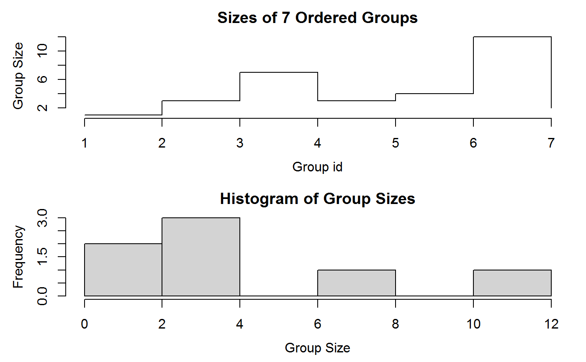
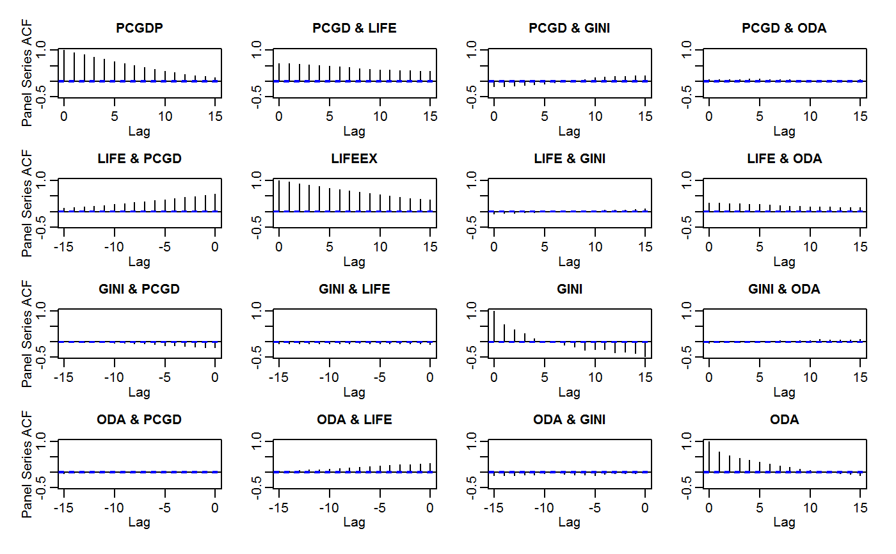
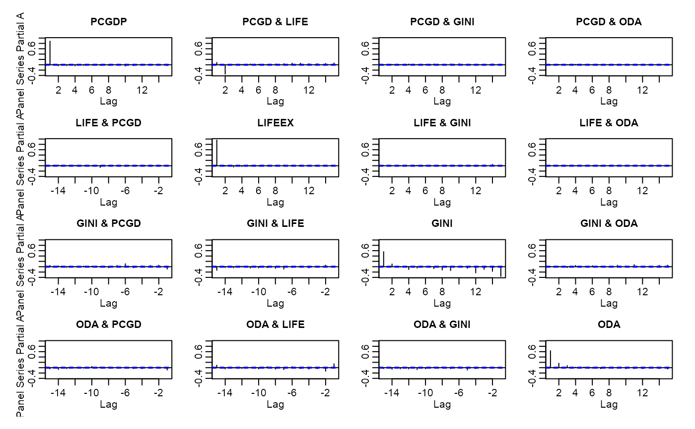
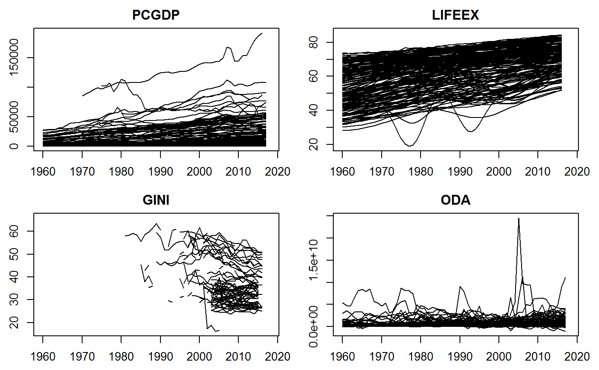

collapse-package.Rdcollapse is a C/C++ based package for data transformation and statistical computing in R. It's aims are:
To facilitate complex data transformation, exploration and computing tasks in R.
To help make R code fast, flexible, parsimonious and programmer friendly.
It is made compatible with dplyr, data.table and the plm approach to panel data, and non-destructively handles other classes.
See Collapse Documentation & Overview, or read the introductory vignette. All vignettes can be accessed on the package website. A cheatsheet is available at Rstudio. A compact introduction for quick-starters is provided in the examples section below.
collapse provides an integrated suite of statistical and data manipulation functions. These improve, complement and extend the capabilities of base R and packages like dplyr, data.table, plm, matrixStats, Rfast etc.. Key Highlights:
Fast C/C++ based (grouped, weighted) computations embedded in highly optimized R code.
More complex statistical, time series / panel data and recursive (list-processing) operations.
A flexible and generic approach supporting and preserving many R objects.
Optimized programming in standard and non-standard evaluation.
The statistical functions in collapse are S3 generic with core methods for vectors, matrices and data frames, and internally support grouped and weighted computations carried out in C/C++. R code is strongly optimized and inputs are swiftly passed to compiled C/C++ code, where various efficient algorithms are implemented.
To facilitate efficient programming, core S3 methods, grouping and ordering functionality and some C-level helper functions can be accessed by the user.
Additional (hidden) S3 methods provide broad based compatibility with dplyr (grouped tibble), data.table and plm panel data classes. Functions and core methods also seek to preserve object attributes (including column attributes such as variable labels), ensuring flexibility and non-destructive workflows with a very broad range of R objects (including most time-series classes).
Missing values are efficiently skipped at C/C++ level. The package default is na.rm = TRUE, whereas na.rm = FALSE also yields efficient checking and early termination. Missing weights are supported. Core functionality and all statistical functions / computations are tested with 10,000 unit tests for Base R equivalence, exempting some improvements (e.g. fsum(NA, na.rm = TRUE) evaluates to NA, not 0, similarly for fmin and fmax; no NaN values are generated from computations involving NA values). Generic functions provide some security against silent swallowing of arguments.
collapse installs with a built-in hierarchical documentation facilitating the use of the package. The vignettes are complimentary and also follow a more structured approach.
The package is mainly coded in C++ and built with Rcpp, but also uses C functions from data.table (grouping, ordering, subsetting, row-binding), fixest (centering on multiple factors), weights (weighted pairwise correlations), stats (ACF and PACF) and RcppArmadillo / RcppEigen (fast linear fitting methods). For the moment collapse does not utilize low-level parallelism (such as OpenMP).
Maintainer: Sebastian Krantz sebastian.krantz@graduateinstitute.ch
Other contributors from packages collapse utilizes:
Matt Dowle, Arun Srinivasan and contributors worldwide (data.table)
Dirk Eddelbuettel and contributors worldwide (Rcpp, RcppArmadillo, RcppEigen)
Laurent Berge (fixest)
Josh Pasek (weights)
R Core Team and contributors worldwide (stats)
I thank Ralf Stubner, Joseph Wood and Dirk Eddelbuettel for helpful answers on Stackoverflow, Joris Meys for encouraging me and helping to set up the Github repository for collapse, Matthieu Stigler, Patrice Kiener, Zhiyi Xu and Kevin Tappe for feature requests and helpful suggestions.
If you are interested in extending or optimizing this package, see the source code at https://github.com/SebKrantz/collapse/tree/master, fork and send pull-requests, or e-mail me.
Please send feature requests via e-mail.
Please report issues at https://github.com/SebKrantz/collapse/issues or e-mail me.
## Let's start with some statistical programming v <- iris$Sepal.Length d <- num_vars(iris) # Saving numeric variables f <- iris$Species # Factor # Simple statistics fmean(v) # vector#> [1] 5.843333#> Sepal.Length Sepal.Width Petal.Length Petal.Width #> 5.843333 3.057333 3.758000 1.199333#> Sepal.Length Sepal.Width Petal.Length Petal.Width #> 5.843333 3.057333 3.758000 1.199333#> Sepal.Length Sepal.Width Petal.Length Petal.Width #> [1,] 5.843333 3.057333 3.758 1.199333#> Sepal.Length Sepal.Width Petal.Length Petal.Width #> 1 5.843333 3.057333 3.758 1.199333#> Sepal.Length Sepal.Width Petal.Length Petal.Width #> 5.776605 3.059187 3.648546 1.174385#> Sepal.Length Sepal.Width Petal.Length Petal.Width #> setosa 5.006 3.428 1.462 0.246 #> versicolor 5.936 2.770 4.260 1.326 #> virginica 6.588 2.974 5.552 2.026#> Sepal.Length Sepal.Width Petal.Length Petal.Width #> setosa 4.953186 3.394165 1.411027 0.2384878 #> versicolor 5.952750 2.753233 4.268907 1.3287435 #> virginica 6.483938 2.979511 5.444769 2.0190572#> Sepal.Length Sepal.Width Petal.Length Petal.Width #> 1 5 3 1.5 0.2 #> 2 5 3 1.5 0.2 #> 3 5 3 1.5 0.2 #> 4 5 3 1.5 0.2 #> 5 5 3 1.5 0.2 #> 6 5 3 1.5 0.2#> Sepal.Length Sepal.Width Petal.Length Petal.Width #> 1 -0.7 0.5 -2.95 -1.1 #> 2 -0.9 0.0 -2.95 -1.1 #> 3 -1.1 0.2 -3.05 -1.1 #> 4 -1.2 0.1 -2.85 -1.1 #> 5 -0.8 0.6 -2.95 -1.1 #> 6 -0.4 0.9 -2.65 -0.9#> Sepal.Length Sepal.Width Petal.Length Petal.Width #> 1 0.5818597 0.7631923 0.2483591 0.1111729 #> 2 0.5590416 0.6541648 0.2483591 0.1111729 #> 3 0.5362236 0.6977758 0.2306191 0.1111729 #> 4 0.5248146 0.6759703 0.2660990 0.1111729 #> 5 0.5704507 0.7849978 0.2483591 0.1111729 #> 6 0.6160867 0.8504143 0.3015789 0.2223457#> Sepal.Length Sepal.Width Petal.Length Petal.Width #> 1 6.158928 8.029986 0.7930671 0.2623854 #> 2 5.917402 6.882845 0.7930671 0.2623854 #> 3 5.675875 7.341701 0.7364195 0.2623854 #> 4 5.555112 7.112273 0.8497148 0.2623854 #> 5 6.038165 8.259414 0.7930671 0.2623854 #> 6 6.521218 8.947698 0.9630101 0.5247707# Weighted Transformations... head(fnth(d, 0.75, w = w, TRA = "replace")) # Replacing by the weighted 3rd quartile#> Sepal.Length Sepal.Width Petal.Length Petal.Width #> 1 6.4 3.3 5.1 1.8 #> 2 6.4 3.3 5.1 1.8 #> 3 6.4 3.3 5.1 1.8 #> 4 6.4 3.3 5.1 1.8 #> 5 6.4 3.3 5.1 1.8 #> 6 6.4 3.3 5.1 1.8# Grouped Transformations... head(fvar(d, f, TRA = "replace")) # Replacing values with the group variance#> Sepal.Length Sepal.Width Petal.Length Petal.Width #> 1 0.124249 0.1436898 0.03015918 0.01110612 #> 2 0.124249 0.1436898 0.03015918 0.01110612 #> 3 0.124249 0.1436898 0.03015918 0.01110612 #> 4 0.124249 0.1436898 0.03015918 0.01110612 #> 5 0.124249 0.1436898 0.03015918 0.01110612 #> 6 0.124249 0.1436898 0.03015918 0.01110612#> Sepal.Length Sepal.Width Petal.Length Petal.Width #> 1 14.46851 9.233260 8.061544 1.897793 #> 2 13.90112 7.914223 8.061544 1.897793 #> 3 13.33372 8.441838 7.485720 1.897793 #> 4 13.05003 8.178031 8.637369 1.897793 #> 5 14.18481 9.497068 8.061544 1.897793 #> 6 15.31960 10.288490 9.789018 3.795585#> Sepal.Length Sepal.Width Petal.Length Petal.Width #> 1 0.8 1.2 0.4 0.1 #> 2 0.6 0.7 0.4 0.1 #> 3 0.4 0.9 0.3 0.1 #> 4 0.3 0.8 0.5 0.1 #> 5 0.7 1.3 0.4 0.1 #> 6 1.1 1.6 0.7 0.3#> Sepal.Length Sepal.Width Petal.Length Petal.Width #> 1 0.02037555 0.02042007 0.01915185 0.01626016 #> 2 0.01957651 0.01750292 0.01915185 0.01626016 #> 3 0.01877747 0.01866978 0.01778386 0.01626016 #> 4 0.01837795 0.01808635 0.02051984 0.01626016 #> 5 0.01997603 0.02100350 0.01915185 0.01626016 #> 6 0.02157411 0.02275379 0.02325581 0.03252033#> Sepal.Length Sepal.Width Petal.Length Petal.Width #> 1 0.1 0.1 -0.1 0.0 #> 2 -0.1 -0.4 -0.1 0.0 #> 3 -0.3 -0.2 -0.2 0.0 #> 4 -0.4 -0.3 0.0 0.0 #> 5 0.0 0.2 -0.1 0.0 #> 6 0.4 0.5 0.2 0.2#> Sepal.Length Sepal.Width Petal.Length Petal.Width #> 1 0.0 0.0 0.0 0 #> 2 4.9 3.0 0.0 0 #> 3 4.7 3.2 1.3 0 #> 4 4.6 3.1 0.1 0 #> 5 5.0 0.1 0.0 0 #> 6 0.3 0.4 0.3 0#> Sepal.Length Sepal.Width Petal.Length Petal.Width #> 1 13.43241 9.195503 7.099440 2.15052 #> 2 12.90565 7.881860 7.099440 2.15052 #> 3 12.37889 8.407317 6.592337 2.15052#> Sepal.Length Sepal.Width Petal.Length Petal.Width #> 1 0.1 0.1 0.0 0 #> 2 -0.1 -0.4 0.0 0 #> 3 -0.3 -0.2 -0.1 0#> Sepal.Length Sepal.Width Petal.Length Petal.Width #> 1 5 3.4 1.4 0.2 #> 2 5 3.4 1.4 0.2 #> 3 5 3.4 1.4 0.2## Some more advanced transformations... head(fbetween(d)) # Averaging (faster t.: fmean(d, TRA = "replace"))#> Sepal.Length Sepal.Width Petal.Length Petal.Width #> 1 5.843333 3.057333 3.758 1.199333 #> 2 5.843333 3.057333 3.758 1.199333 #> 3 5.843333 3.057333 3.758 1.199333 #> 4 5.843333 3.057333 3.758 1.199333 #> 5 5.843333 3.057333 3.758 1.199333 #> 6 5.843333 3.057333 3.758 1.199333#> Sepal.Length Sepal.Width Petal.Length Petal.Width #> 1 -0.7433333 0.44266667 -2.358 -0.9993333 #> 2 -0.9433333 -0.05733333 -2.358 -0.9993333 #> 3 -1.1433333 0.14266667 -2.458 -0.9993333 #> 4 -1.2433333 0.04266667 -2.258 -0.9993333 #> 5 -0.8433333 0.54266667 -2.358 -0.9993333 #> 6 -0.4433333 0.84266667 -2.058 -0.7993333#> Sepal.Length Sepal.Width Petal.Length Petal.Width #> 1 0.14681396 0.1058355 -0.0110271 -0.03848783 #> 2 -0.05318604 -0.3941645 -0.0110271 -0.03848783 #> 3 -0.25318604 -0.1941645 -0.1110271 -0.03848783 #> 4 -0.35318604 -0.2941645 0.0889729 -0.03848783 #> 5 0.04681396 0.2058355 -0.0110271 -0.03848783 #> 6 0.44681396 0.5058355 0.2889729 0.16151217#> Sepal.Length Sepal.Width Petal.Length Petal.Width #> 1 5.146814 5.105835 4.988973 4.961512 #> 2 4.946814 4.605835 4.988973 4.961512 #> 3 4.746814 4.805835 4.888973 4.961512 #> 4 4.646814 4.705835 5.088973 4.961512 #> 5 5.046814 5.205835 4.988973 4.961512 #> 6 5.446814 5.505835 5.288973 5.161512#> Sepal.Length Sepal.Width Petal.Length Petal.Width #> 1 1.3355786 0.920435 0.3276194 0.01874925 #> 2 1.1355786 0.420435 0.3276194 0.01874925 #> 3 0.9355786 0.620435 0.2276194 0.01874925 #> 4 0.8355786 0.520435 0.4276194 0.01874925 #> 5 1.2355786 1.020435 0.3276194 0.01874925 #> 6 1.6355786 1.320435 0.6276194 0.21874925#> Sepal.Length Sepal.Width Petal.Length Petal.Width #> 1 5.923419 3.165023 3.637519 1.135897 #> 2 5.723419 2.665023 3.637519 1.135897 #> 3 5.523419 2.865023 3.537519 1.135897 #> 4 5.423419 2.765023 3.737519 1.135897 #> 5 5.823419 3.265023 3.637519 1.135897 #> 6 6.223419 3.565023 3.937519 1.335897#> Sepal.Length Sepal.Width Petal.Length Petal.Width #> 1 -0.8976739 1.01560199 -1.335752 -1.311052 #> 2 -1.1392005 -0.13153881 -1.335752 -1.311052 #> 3 -1.3807271 0.32731751 -1.392399 -1.311052 #> 4 -1.5014904 0.09788935 -1.279104 -1.311052 #> 5 -1.0184372 1.24503015 -1.335752 -1.311052 #> 6 -0.5353840 1.93331463 -1.165809 -1.048667#> Sepal.Length Sepal.Width Petal.Length Petal.Width #> 1 2.3069784 8.046806 0.9927451 1.066844 #> 2 1.5823985 4.605384 0.9927451 1.066844 #> 3 0.8578187 5.981953 0.8228021 1.066844 #> 4 0.4955288 5.293668 1.1626881 1.066844 #> 5 1.9446885 8.735090 0.9927451 1.066844 #> 6 3.3938481 10.799944 1.5025740 1.854000#> Sepal.Length Sepal.Width Petal.Length Petal.Width #> 1 3.150312 6.104139 -0.24925490 -2.733823 #> 2 2.425732 2.662717 -0.24925490 -2.733823 #> 3 1.701152 4.039286 -0.41919786 -2.733823 #> 4 1.338862 3.351001 -0.07931195 -2.733823 #> 5 2.788022 6.792424 -0.24925490 -2.733823 #> 6 4.237181 8.857277 0.26057397 -1.946667#> Sepal.Length Sepal.Width Petal.Length Petal.Width #> 1 0.3866795 0.2780602 -0.05591874 -0.4138441 #> 2 -0.1400817 -1.0355831 -0.05591874 -0.4138441 #> 3 -0.6668429 -0.5101258 -0.56302158 -0.4138441 #> 4 -0.9302235 -0.7728545 0.45118410 -0.4138441 #> 5 0.1232989 0.5407889 -0.05591874 -0.4138441 #> 6 1.1768213 1.3289749 1.46538978 1.7366754#> Sepal.Length Sepal.Width Petal.Length Petal.Width #> 1 6.160038 5.834181 4.832244 3.758468 #> 2 4.579755 1.893251 4.832244 3.758468 #> 3 2.999471 3.469623 3.310935 3.758468 #> 4 2.209329 2.681437 6.353552 3.758468 #> 5 5.369897 6.622367 4.832244 3.758468 #> 6 8.530464 8.986925 9.396169 10.210026head(fscale(d, f, w, mean = FALSE, # Preserving group means sd = "within.sd")) # and setting group-sd to fsd(fwithin(d, f, w), w = w)#> Sepal.Length Sepal.Width Petal.Length Petal.Width #> 1 5.150131 3.490028 1.387948 0.1476540 #> 2 4.881839 3.037139 1.387948 0.1476540 #> 3 4.613547 3.218294 1.178651 0.1476540 #> 4 4.479402 3.127717 1.597244 0.1476540 #> 5 5.015985 3.580606 1.387948 0.1476540 #> 6 5.552568 3.852339 2.015838 0.6196673head(fscale(d, f, w, mean = "overall.mean", # Full harmonization of group means and variances, sd = "within.sd")) # while preserving the level and scale of the data.#> Sepal.Length Sepal.Width Petal.Length Petal.Width #> 1 5.973549 3.155051 3.625467 1.083551 #> 2 5.705258 2.702161 3.625467 1.083551 #> 3 5.436966 2.883317 3.416170 1.083551 #> 4 5.302820 2.792739 3.834764 1.083551 #> 5 5.839404 3.245628 3.625467 1.083551 #> 6 6.375987 3.517362 4.253357 1.555564#> Sepal.Length Sepal.Width #> 1 5.1 3.5 #> 2 4.9 3.0 #> 3 4.7 3.2 #> 4 4.6 3.1 #> 5 5.0 3.6 #> 6 5.4 3.9#> Sepal.Length Sepal.Width #> 1 4.950107 3.389732 #> 2 4.950107 3.389732 #> 3 4.859513 3.374264 #> 4 5.040702 3.405199 #> 5 4.950107 3.389732 #> 6 5.220692 3.560823#> Sepal.Length Sepal.Width #> 1 0.14989286 0.1102684 #> 2 -0.05010714 -0.3897316 #> 3 -0.15951256 -0.1742640 #> 4 -0.44070173 -0.3051992 #> 5 0.04989286 0.2102684 #> 6 0.17930818 0.3391766#> Sepal.Length Sepal.Width #> 1 5.1 3.5 #> 2 4.9 3.0 #> 3 4.7 3.2 #> 4 4.6 3.1 #> 5 5.0 3.6 #> 6 5.4 3.9 #> 7 4.6 3.4 #> 8 5.0 3.4 #> 9 4.4 2.9 #> 10 4.9 3.1#> F1 -- L1 L2 L3 #> [1,] 118 112 NA NA NA #> [2,] 132 118 112 NA NA #> [3,] 129 132 118 112 NA #> [4,] 121 129 132 118 112 #> [5,] 135 121 129 132 118 #> [6,] 148 135 121 129 132head(fdiff(EuStockMarkets, # Suitably lagged first and second differences c(1, frequency(EuStockMarkets)), diff = 1:2))#> D1.DAX D2.DAX L260D1.DAX L260D2.DAX D1.SMI D2.SMI L260D1.SMI L260D2.SMI #> [1,] NA NA NA NA NA NA NA NA #> [2,] -15.12 NA NA NA 10.4 NA NA NA #> [3,] -7.12 8.00 NA NA -9.9 -20.3 NA NA #> [4,] 14.53 21.65 NA NA 5.5 15.4 NA NA #> [5,] -2.88 -17.41 NA NA 2.5 -3.0 NA NA #> [6,] -7.55 -4.67 NA NA -15.0 -17.5 NA NA #> D1.CAC D2.CAC L260D1.CAC L260D2.CAC D1.FTSE D2.FTSE L260D1.FTSE #> [1,] NA NA NA NA NA NA NA #> [2,] -22.3 NA NA NA 16.6 NA NA #> [3,] -32.5 -10.2 NA NA -12.0 -28.6 NA #> [4,] -9.9 22.6 NA NA 22.2 34.2 NA #> [5,] 15.0 24.9 NA NA 14.3 -7.9 NA #> [6,] -8.8 -23.8 NA NA -17.9 -32.2 NA #> L260D2.FTSE #> [1,] NA #> [2,] NA #> [3,] NA #> [4,] NA #> [5,] NA #> [6,] NA#> DAX SMI CAC FTSE #> [1,] NA NA NA NA #> [2,] 196.6175 228.553 208.164 334.268 #> [3,] 202.6519 209.605 195.065 307.826 #> [4,] 223.3763 223.718 213.440 340.466 #> [5,] 207.8552 221.433 237.053 335.452 #> [6,] 202.8108 204.258 215.203 305.111#> DAX SMI CAC FTSE #> [1,] NA NA NA NA #> [2,] -0.009326550 0.006178360 -0.012658756 0.006770286 #> [3,] -0.004422175 -0.005880448 -0.018740638 -0.004889587 #> [4,] 0.009003794 0.003271184 -0.005779182 0.009027020 #> [5,] -0.001778217 0.001483372 0.008743353 0.005771847 #> [6,] -0.004676712 -0.008933417 -0.005120160 -0.007230164#> DAX SMI CAC FTSE #> [1,] NA NA NA NA #> [2,] -0.9283193 0.6197485 -1.2578971 0.6793256 #> [3,] -0.4412412 -0.5863192 -1.8566124 -0.4877652 #> [4,] 0.9044450 0.3276540 -0.5762515 0.9067887 #> [5,] -0.1776637 0.1484472 0.8781687 0.5788536 #> [6,] -0.4665793 -0.8893632 -0.5107074 -0.7204089#> DAX SMI CAC FTSE #> [1,] NA NA NA NA #> [2,] -0.9326550 0.6178360 -1.2658756 0.6770286 #> [3,] -0.4422175 -0.5880448 -1.8740638 -0.4889587 #> [4,] 0.9003794 0.3271184 -0.5779182 0.9027020 #> [5,] -0.1778217 0.1483372 0.8743353 0.5771847 #> [6,] -0.4676712 -0.8933417 -0.5120160 -0.7230164# Note that it is not necessary to use factors for grouping. fmean(gv(mtcars, -c(2,8:9)), mtcars$cyl) # Can also use vector (internally converted using qF())#> mpg disp hp drat wt qsec gear carb #> 4 26.66364 105.1364 82.63636 4.070909 2.285727 19.13727 4.090909 1.545455 #> 6 19.74286 183.3143 122.28571 3.585714 3.117143 17.97714 3.857143 3.428571 #> 8 15.10000 353.1000 209.21429 3.229286 3.999214 16.77214 3.285714 3.500000fmean(gv(mtcars, -c(2,8:9)), gv(mtcars, c(2,8:9))) # or a list of vector (internally grouped using GRP())#> mpg disp hp drat wt qsec gear carb #> 4.0.1 26.00000 120.3000 91.00000 4.430000 2.140000 16.70000 5.000000 2.000000 #> 4.1.0 22.90000 135.8667 84.66667 3.770000 2.935000 20.97000 3.666667 1.666667 #> 4.1.1 28.37143 89.8000 80.57143 4.148571 2.028286 18.70000 4.142857 1.428571 #> 6.0.1 20.56667 155.0000 131.66667 3.806667 2.755000 16.32667 4.333333 4.666667 #> 6.1.0 19.12500 204.5500 115.25000 3.420000 3.388750 19.21500 3.500000 2.500000 #> 8.0.0 15.05000 357.6167 194.16667 3.120833 4.104083 17.14250 3.000000 3.083333 #> 8.0.1 15.40000 326.0000 299.50000 3.880000 3.370000 14.55000 5.000000 6.000000g <- GRP(mtcars, ~ cyl + vs + am) # It is also possible to create grouping objects print(g) # These are instructive to learn about the grouping,#> collapse grouping object of length 32 with 7 ordered groups #> #> Call: GRP.default(X = mtcars, by = ~cyl + vs + am), X is unordered #> #> Distribution of group sizes: #> Min. 1st Qu. Median Mean 3rd Qu. Max. #> 1.000 2.500 3.000 4.571 5.500 12.000 #> #> Groups with sizes: #> 4.0.1 4.1.0 4.1.1 6.0.1 6.1.0 8.0.0 8.0.1 #> 1 3 7 3 4 12 2#> mpg disp hp drat wt qsec gear carb #> 4.0.1 26.00000 120.3000 91.00000 4.430000 2.140000 16.70000 5.000000 2.000000 #> 4.1.0 22.90000 135.8667 84.66667 3.770000 2.935000 20.97000 3.666667 1.666667 #> 4.1.1 28.37143 89.8000 80.57143 4.148571 2.028286 18.70000 4.142857 1.428571 #> 6.0.1 20.56667 155.0000 131.66667 3.806667 2.755000 16.32667 4.333333 4.666667 #> 6.1.0 19.12500 204.5500 115.25000 3.420000 3.388750 19.21500 3.500000 2.500000 #> 8.0.0 15.05000 357.6167 194.16667 3.120833 4.104083 17.14250 3.000000 3.083333 #> 8.0.1 15.40000 326.0000 299.50000 3.880000 3.370000 14.55000 5.000000 6.000000#> mpg disp hp drat wt qsec gear #> 4.0.1 NA NA NA NA NA NA NA #> 4.1.0 1.4525839 13.969371 19.65536 0.1300000 0.4075230 1.67143651 0.5773503 #> 4.1.1 4.7577005 18.802128 24.14441 0.3783926 0.4400840 0.94546285 0.3779645 #> 6.0.1 0.7505553 8.660254 37.52777 0.1616581 0.1281601 0.76872188 0.5773503 #> 6.1.0 1.6317169 44.742634 9.17878 0.5919459 0.1162164 0.81590441 0.5773503 #> 8.0.0 2.7743959 71.823494 33.35984 0.2302749 0.7683069 0.80164745 0.0000000 #> 8.0.1 0.5656854 35.355339 50.20458 0.4808326 0.2828427 0.07071068 0.0000000 #> carb #> 4.0.1 NA #> 4.1.0 0.5773503 #> 4.1.1 0.5345225 #> 6.0.1 1.1547005 #> 6.1.0 1.7320508 #> 8.0.0 0.9003366 #> 8.0.1 2.8284271# Factors can efficiently be created using qF() f1 <- qF(mtcars$cyl) # Unlike GRP objects, factors are checked for NA's f2 <- qF(mtcars$cyl, na.exclude = FALSE) # This can however be avoided through this option class(f2) # Note the added class#> [1] "factor" "na.included"library(microbenchmark) microbenchmark(fmean(mtcars, f1), fmean(mtcars, f2)) # A minor difference, larger on larger data#> Unit: microseconds #> expr min lq mean median uq max neval cld #> fmean(mtcars, f1) 15.618 16.065 18.19365 16.511 17.1805 70.507 100 a #> fmean(mtcars, f2) 14.280 15.172 17.18520 15.173 16.0650 74.969 100 a#> [1] 6.0.1 6.0.1 4.1.1 6.1.0 8.0.0 6.1.0 8.0.0 4.1.0 4.1.0 6.1.0 6.1.0 8.0.0 #> [13] 8.0.0 8.0.0 8.0.0 8.0.0 8.0.0 4.1.1 4.1.1 4.1.1 4.1.0 8.0.0 8.0.0 8.0.0 #> [25] 8.0.0 4.1.1 4.0.1 4.1.1 8.0.1 6.0.1 8.0.1 4.1.1 #> Levels: 4.0.1 4.1.0 4.1.1 6.0.1 6.1.0 8.0.0 8.0.1#> [1] 6.0.1 6.0.1 4.1.1 6.1.0 8.0.0 6.1.0 8.0.0 4.1.0 4.1.0 6.1.0 6.1.0 8.0.0 #> [13] 8.0.0 8.0.0 8.0.0 8.0.0 8.0.0 4.1.1 4.1.1 4.1.1 4.1.0 8.0.0 8.0.0 8.0.0 #> [25] 8.0.0 4.1.1 4.0.1 4.1.1 8.0.1 6.0.1 8.0.1 4.1.1 #> Levels: 4.0.1 4.1.0 4.1.1 6.0.1 6.1.0 8.0.0 8.0.1# Simple row- or column-wise computations on matrices or data frames with dapply() dapply(mtcars, quantile) # column quantiles#> mpg cyl disp hp drat wt qsec vs am gear carb #> 0% 10.400 4 71.100 52.0 2.760 1.51300 14.5000 0 0 3 1 #> 25% 15.425 4 120.825 96.5 3.080 2.58125 16.8925 0 0 3 2 #> 50% 19.200 6 196.300 123.0 3.695 3.32500 17.7100 0 0 4 2 #> 75% 22.800 8 326.000 180.0 3.920 3.61000 18.9000 1 1 4 4 #> 100% 33.900 8 472.000 335.0 4.930 5.42400 22.9000 1 1 5 8#> 0% 25% 50% 75% 100% #> Mazda RX4 0 3.2600 4.000 18.730 160.0 #> Mazda RX4 Wag 0 3.3875 4.000 19.010 160.0 #> Datsun 710 1 1.6600 4.000 20.705 108.0 #> Hornet 4 Drive 0 2.0000 3.215 20.420 258.0 #> Hornet Sportabout 0 2.5000 3.440 17.860 360.0 #> Valiant 0 1.8800 3.460 19.160 225.0 #> Duster 360 0 3.1050 4.000 15.070 360.0 #> Merc 240D 0 2.5950 4.000 22.200 146.7 #> Merc 230 0 2.5750 4.000 22.850 140.8 #> Merc 280 0 3.6800 4.000 18.750 167.6 #> Merc 280C 0 3.6800 4.000 18.350 167.6 #> Merc 450SE 0 3.0000 4.070 16.900 275.8 #> Merc 450SL 0 3.0000 3.730 17.450 275.8 #> Merc 450SLC 0 3.0000 3.780 16.600 275.8 #> Cadillac Fleetwood 0 2.9650 5.250 14.190 472.0 #> Lincoln Continental 0 3.0000 5.424 14.110 460.0 #> Chrysler Imperial 0 3.1150 5.345 16.060 440.0 #> Fiat 128 1 1.6000 4.000 25.935 78.7 #> Honda Civic 1 1.8075 4.000 24.460 75.7 #> Toyota Corolla 1 1.4175 4.000 26.900 71.1 #> Toyota Corona 0 1.7325 3.700 20.755 120.1 #> Dodge Challenger 0 2.3800 3.520 16.185 318.0 #> AMC Javelin 0 2.5000 3.435 16.250 304.0 #> Camaro Z28 0 3.3650 4.000 14.355 350.0 #> Pontiac Firebird 0 2.5000 3.845 18.125 400.0 #> Fiat X1-9 1 1.4675 4.000 23.100 79.0 #> Porsche 914-2 0 2.0700 4.430 21.350 120.3 #> Lotus Europa 1 1.7565 4.000 23.650 113.0 #> Ford Pantera L 0 3.5850 5.000 15.150 351.0 #> Ferrari Dino 0 3.1950 6.000 17.600 175.0 #> Maserati Bora 0 3.5550 8.000 14.800 335.0 #> Volvo 142E 1 2.3900 4.000 20.000 121.0# dapply preserves the data structure of any matrices / data frames passed # Some fast matrix row/column functions are also provided by the matrixStats package # Similarly, BY performs grouped comptations BY(mtcars, f2, quantile)#> mpg cyl disp hp drat wt qsec vs am gear carb #> 4.0% 21.40 4 71.10 52.00 3.690 1.51300 16.7000 0 0.0 3.0 1.00 #> 4.25% 22.80 4 78.85 65.50 3.810 1.88500 18.5600 1 0.5 4.0 1.00 #> 4.50% 26.00 4 108.00 91.00 4.080 2.20000 18.9000 1 1.0 4.0 2.00 #> 4.75% 30.40 4 120.65 96.00 4.165 2.62250 19.9500 1 1.0 4.0 2.00 #> 4.100% 33.90 4 146.70 113.00 4.930 3.19000 22.9000 1 1.0 5.0 2.00 #> 6.0% 17.80 6 145.00 105.00 2.760 2.62000 15.5000 0 0.0 3.0 1.00 #> 6.25% 18.65 6 160.00 110.00 3.350 2.82250 16.7400 0 0.0 3.5 2.50 #> 6.50% 19.70 6 167.60 110.00 3.900 3.21500 18.3000 1 0.0 4.0 4.00 #> 6.75% 21.00 6 196.30 123.00 3.910 3.44000 19.1700 1 1.0 4.0 4.00 #> 6.100% 21.40 6 258.00 175.00 3.920 3.46000 20.2200 1 1.0 5.0 6.00 #> 8.0% 10.40 8 275.80 150.00 2.760 3.17000 14.5000 0 0.0 3.0 2.00 #> 8.25% 14.40 8 301.75 176.25 3.070 3.53250 16.0975 0 0.0 3.0 2.25 #> 8.50% 15.20 8 350.50 192.50 3.115 3.75500 17.1750 0 0.0 3.0 3.50 #> 8.75% 16.25 8 390.00 241.25 3.225 4.01375 17.5550 0 0.0 3.0 4.00 #> 8.100% 19.20 8 472.00 335.00 4.220 5.42400 18.0000 0 1.0 5.0 8.00#> mpg.0% mpg.25% mpg.50% mpg.75% mpg.100% cyl.0% cyl.25% cyl.50% cyl.75% #> 4 21.4 22.80 26.0 30.40 33.9 4 4 4 4 #> 6 17.8 18.65 19.7 21.00 21.4 6 6 6 6 #> 8 10.4 14.40 15.2 16.25 19.2 8 8 8 8 #> cyl.100% disp.0% disp.25% disp.50% disp.75% disp.100% hp.0% hp.25% hp.50% #> 4 4 71.1 78.85 108.0 120.65 146.7 52 65.50 91.0 #> 6 6 145.0 160.00 167.6 196.30 258.0 105 110.00 110.0 #> 8 8 275.8 301.75 350.5 390.00 472.0 150 176.25 192.5 #> hp.75% hp.100% drat.0% drat.25% drat.50% drat.75% drat.100% wt.0% wt.25% #> 4 96.00 113 3.69 3.81 4.080 4.165 4.93 1.513 1.8850 #> 6 123.00 175 2.76 3.35 3.900 3.910 3.92 2.620 2.8225 #> 8 241.25 335 2.76 3.07 3.115 3.225 4.22 3.170 3.5325 #> wt.50% wt.75% wt.100% qsec.0% qsec.25% qsec.50% qsec.75% qsec.100% vs.0% #> 4 2.200 2.62250 3.190 16.7 18.5600 18.900 19.950 22.90 0 #> 6 3.215 3.44000 3.460 15.5 16.7400 18.300 19.170 20.22 0 #> 8 3.755 4.01375 5.424 14.5 16.0975 17.175 17.555 18.00 0 #> vs.25% vs.50% vs.75% vs.100% am.0% am.25% am.50% am.75% am.100% gear.0% #> 4 1 1 1 1 0 0.5 1 1 1 3 #> 6 0 1 1 1 0 0.0 0 1 1 3 #> 8 0 0 0 0 0 0.0 0 0 1 3 #> gear.25% gear.50% gear.75% gear.100% carb.0% carb.25% carb.50% carb.75% #> 4 4.0 4 4 5 1 1.00 2.0 2 #> 6 3.5 4 4 5 1 2.50 4.0 4 #> 8 3.0 3 3 5 2 2.25 3.5 4 #> carb.100% #> 4 2 #> 6 6 #> 8 8# For efficient (grouped) replacing and sweeping out computed statistics, use TRA() sds <- fsd(mtcars) head(TRA(mtcars, sds, "/")) # Simple scaling (if sd's not needed, use fsd(mtcars, TRA = "/"))#> mpg cyl disp hp drat wt #> Mazda RX4 3.484351 3.35961 1.2909608 1.604367 7.294100 2.677684 #> Mazda RX4 Wag 3.484351 3.35961 1.2909608 1.604367 7.294100 2.938298 #> Datsun 710 3.783009 2.23974 0.8713986 1.356419 7.200586 2.371079 #> Hornet 4 Drive 3.550719 3.35961 2.0816744 1.604367 5.760468 3.285784 #> Hornet Sportabout 3.102731 4.47948 2.9046619 2.552402 5.891388 3.515738 #> Valiant 3.003178 3.35961 1.8154137 1.531441 5.161978 3.536178 #> qsec vs am gear carb #> Mazda RX4 9.211261 0.000000 2.004044 5.421494 2.4764735 #> Mazda RX4 Wag 9.524645 0.000000 2.004044 5.421494 2.4764735 #> Datsun 710 10.414433 1.984063 2.004044 5.421494 0.6191184 #> Hornet 4 Drive 10.878913 1.984063 0.000000 4.066120 0.6191184 #> Hornet Sportabout 9.524645 0.000000 0.000000 4.066120 1.2382368 #> Valiant 11.315413 1.984063 0.000000 4.066120 0.6191184#> Unit: microseconds #> expr min lq mean median uq #> TRA(mtcars, sds, "/") 10.263 13.387 21.99565 22.759 28.3365 #> sweep(mtcars, 2, sds, "/") 1084.825 1104.014 1148.31685 1113.608 1153.9930 #> max neval cld #> 56.673 100 a #> 1398.536 100 bsds <- fsd(mtcars, f2) head(TRA(mtcars, sds, "/", f2)) # Groupd scaling (if sd's not needed: fsd(mtcars, f2, TRA = "/"))#> mpg cyl disp hp drat wt qsec #> Mazda RX4 14.447218 Inf 3.849628 4.534121 8.192327 7.352414 9.643407 #> Mazda RX4 Wag 14.447218 Inf 3.849628 4.534121 8.192327 8.068012 9.971493 #> Datsun 710 5.055626 Inf 4.019114 4.442421 10.534350 4.073293 11.061282 #> Hornet 4 Drive 14.722403 Inf 6.207525 4.534121 6.469838 9.022142 11.389297 #> Hornet Sportabout 7.304550 Inf 5.311981 3.432928 8.459515 4.529864 14.230606 #> Valiant 12.452126 Inf 5.413539 4.328025 5.797647 9.709677 11.846275 #> vs am gear carb #> Mazda RX4 0.000000 1.870829 5.796551 2.2067091 #> Mazda RX4 Wag 0.000000 1.870829 5.796551 2.2067091 #> Datsun 710 3.316625 2.140872 7.416198 1.9148542 #> Hornet 4 Drive 1.870829 0.000000 4.347413 0.5516773 #> Hornet Sportabout NaN 0.000000 4.130678 1.2848321 #> Valiant 1.870829 0.000000 4.347413 0.5516773# All functions above perserve the structure of matrices / data frames # If conversions are required, use these efficient functions: mtcarsM <- qM(mtcars) # Matrix from data.frame head(qDF(mtcarsM)) # data.frame from matrix columns#> mpg cyl disp hp drat wt qsec vs am gear carb #> Mazda RX4 21.0 6 160 110 3.90 2.620 16.46 0 1 4 4 #> Mazda RX4 Wag 21.0 6 160 110 3.90 2.875 17.02 0 1 4 4 #> Datsun 710 22.8 4 108 93 3.85 2.320 18.61 1 1 4 1 #> Hornet 4 Drive 21.4 6 258 110 3.08 3.215 19.44 1 0 3 1 #> Hornet Sportabout 18.7 8 360 175 3.15 3.440 17.02 0 0 3 2 #> Valiant 18.1 6 225 105 2.76 3.460 20.22 1 0 3 1#> Mazda RX4 Mazda RX4 Wag Datsun 710 Hornet 4 Drive Hornet Sportabout #> mpg 21.00 21.000 22.80 21.400 18.70 #> cyl 6.00 6.000 4.00 6.000 8.00 #> disp 160.00 160.000 108.00 258.000 360.00 #> hp 110.00 110.000 93.00 110.000 175.00 #> drat 3.90 3.900 3.85 3.080 3.15 #> wt 2.62 2.875 2.32 3.215 3.44 #> Valiant Duster 360 Merc 240D Merc 230 Merc 280 Merc 280C Merc 450SE #> mpg 18.10 14.30 24.40 22.80 19.20 17.80 16.40 #> cyl 6.00 8.00 4.00 4.00 6.00 6.00 8.00 #> disp 225.00 360.00 146.70 140.80 167.60 167.60 275.80 #> hp 105.00 245.00 62.00 95.00 123.00 123.00 180.00 #> drat 2.76 3.21 3.69 3.92 3.92 3.92 3.07 #> wt 3.46 3.57 3.19 3.15 3.44 3.44 4.07 #> Merc 450SL Merc 450SLC Cadillac Fleetwood Lincoln Continental #> mpg 17.30 15.20 10.40 10.400 #> cyl 8.00 8.00 8.00 8.000 #> disp 275.80 275.80 472.00 460.000 #> hp 180.00 180.00 205.00 215.000 #> drat 3.07 3.07 2.93 3.000 #> wt 3.73 3.78 5.25 5.424 #> Chrysler Imperial Fiat 128 Honda Civic Toyota Corolla Toyota Corona #> mpg 14.700 32.40 30.400 33.900 21.500 #> cyl 8.000 4.00 4.000 4.000 4.000 #> disp 440.000 78.70 75.700 71.100 120.100 #> hp 230.000 66.00 52.000 65.000 97.000 #> drat 3.230 4.08 4.930 4.220 3.700 #> wt 5.345 2.20 1.615 1.835 2.465 #> Dodge Challenger AMC Javelin Camaro Z28 Pontiac Firebird Fiat X1-9 #> mpg 15.50 15.200 13.30 19.200 27.300 #> cyl 8.00 8.000 8.00 8.000 4.000 #> disp 318.00 304.000 350.00 400.000 79.000 #> hp 150.00 150.000 245.00 175.000 66.000 #> drat 2.76 3.150 3.73 3.080 4.080 #> wt 3.52 3.435 3.84 3.845 1.935 #> Porsche 914-2 Lotus Europa Ford Pantera L Ferrari Dino Maserati Bora #> mpg 26.00 30.400 15.80 19.70 15.00 #> cyl 4.00 4.000 8.00 6.00 8.00 #> disp 120.30 95.100 351.00 145.00 301.00 #> hp 91.00 113.000 264.00 175.00 335.00 #> drat 4.43 3.770 4.22 3.62 3.54 #> wt 2.14 1.513 3.17 2.77 3.57 #> Volvo 142E #> mpg 21.40 #> cyl 4.00 #> disp 121.00 #> hp 109.00 #> drat 4.11 #> wt 2.78#> cars mpg cyl disp hp drat wt qsec vs am gear carb #> 1: Mazda RX4 21.0 6 160 110 3.90 2.620 16.46 0 1 4 4 #> 2: Mazda RX4 Wag 21.0 6 160 110 3.90 2.875 17.02 0 1 4 4 #> 3: Datsun 710 22.8 4 108 93 3.85 2.320 18.61 1 1 4 1 #> 4: Hornet 4 Drive 21.4 6 258 110 3.08 3.215 19.44 1 0 3 1 #> 5: Hornet Sportabout 18.7 8 360 175 3.15 3.440 17.02 0 0 3 2 #> 6: Valiant 18.1 6 225 105 2.76 3.460 20.22 1 0 3 1#> cars mpg cyl disp hp drat wt qsec vs am gear carb #> 1: Mazda RX4 21.0 6 160 110 3.90 2.620 16.46 0 1 4 4 #> 2: Mazda RX4 Wag 21.0 6 160 110 3.90 2.875 17.02 0 1 4 4 #> 3: Datsun 710 22.8 4 108 93 3.85 2.320 18.61 1 1 4 1 #> 4: Hornet 4 Drive 21.4 6 258 110 3.08 3.215 19.44 1 0 3 1 #> 5: Hornet Sportabout 18.7 8 360 175 3.15 3.440 17.02 0 0 3 2 #> 6: Valiant 18.1 6 225 105 2.76 3.460 20.22 1 0 3 1## Now let's get some real data and see how we can use this power for data manipulation library(magrittr) head(wlddev) # World Bank World Development Data: 216 countries, 59 years, 4 series (columns 9-12)#> country iso3c date year decade region income OECD PCGDP #> 1 Afghanistan AFG 1961-01-01 1960 1960 South Asia Low income FALSE NA #> 2 Afghanistan AFG 1962-01-01 1961 1960 South Asia Low income FALSE NA #> 3 Afghanistan AFG 1963-01-01 1962 1960 South Asia Low income FALSE NA #> 4 Afghanistan AFG 1964-01-01 1963 1960 South Asia Low income FALSE NA #> 5 Afghanistan AFG 1965-01-01 1964 1960 South Asia Low income FALSE NA #> 6 Afghanistan AFG 1966-01-01 1965 1960 South Asia Low income FALSE NA #> LIFEEX GINI ODA #> 1 32.292 NA 114440000 #> 2 32.742 NA 233350000 #> 3 33.185 NA 114880000 #> 4 33.624 NA 236450000 #> 5 34.060 NA 302480000 #> 6 34.495 NA 370250000# Starting with some discriptive tools... namlab(wlddev, class = TRUE) # Show variable names, labels and classes#> Variable Class Label #> 1 country character Country Name #> 2 iso3c factor Country Code #> 3 date Date Date Recorded (Fictitious) #> 4 year integer Year #> 5 decade numeric Decade #> 6 region factor Region #> 7 income factor Income Level #> 8 OECD logical Is OECD Member Country? #> 9 PCGDP numeric GDP per capita (constant 2010 US$) #> 10 LIFEEX numeric Life expectancy at birth, total (years) #> 11 GINI numeric GINI index (World Bank estimate) #> 12 ODA numeric Net ODA received (constant 2015 US$)#> country iso3c date year decade region income OECD PCGDP LIFEEX #> 12744 12744 12744 12744 12744 12744 12744 12744 8995 11068 #> GINI ODA #> 1356 8336#> country iso3c date year decade region income OECD PCGDP LIFEEX GINI #> country 12744 12744 12744 12744 12744 12744 12744 12744 8995 11068 1356 #> iso3c 12744 12744 12744 12744 12744 12744 12744 12744 8995 11068 1356 #> date 12744 12744 12744 12744 12744 12744 12744 12744 8995 11068 1356 #> year 12744 12744 12744 12744 12744 12744 12744 12744 8995 11068 1356 #> decade 12744 12744 12744 12744 12744 12744 12744 12744 8995 11068 1356 #> region 12744 12744 12744 12744 12744 12744 12744 12744 8995 11068 1356 #> income 12744 12744 12744 12744 12744 12744 12744 12744 8995 11068 1356 #> OECD 12744 12744 12744 12744 12744 12744 12744 12744 8995 11068 1356 #> PCGDP 8995 8995 8995 8995 8995 8995 8995 8995 8995 8398 1342 #> LIFEEX 11068 11068 11068 11068 11068 11068 11068 11068 8398 11068 1353 #> GINI 1356 1356 1356 1356 1356 1356 1356 1356 1342 1353 1356 #> ODA 8336 8336 8336 8336 8336 8336 8336 8336 6852 7746 951 #> ODA #> country 8336 #> iso3c 8336 #> date 8336 #> year 8336 #> decade 8336 #> region 8336 #> income 8336 #> OECD 8336 #> PCGDP 6852 #> LIFEEX 7746 #> GINI 951 #> ODA 8336#> country iso3c date year decade region income OECD PCGDP LIFEEX #> Afghanistan 59 59 59 59 59 59 59 59 16 57 #> Albania 59 59 59 59 59 59 59 59 38 57 #> Algeria 59 59 59 59 59 59 59 59 58 57 #> American Samoa 59 59 59 59 59 59 59 59 16 0 #> Andorra 59 59 59 59 59 59 59 59 48 0 #> Angola 59 59 59 59 59 59 59 59 38 57 #> GINI ODA #> Afghanistan 0 58 #> Albania 5 30 #> Algeria 3 58 #> American Samoa 0 0 #> Andorra 0 0 #> Angola 2 56#> country iso3c date year decade region income OECD PCGDP LIFEEX #> 216 216 59 59 7 7 4 2 8995 10048 #> GINI ODA #> 363 7564#> Dataset: wlddev, 12 Variables, N = 12744 #> -------------------------------------------------------------------------------- #> country (character): Country Name #> Stats: #> N Ndist #> 12744 216 #> Table: #> Freq Perc #> Afghanistan 59 0.46 #> Albania 59 0.46 #> Algeria 59 0.46 #> American Samoa 59 0.46 #> Andorra 59 0.46 #> Angola 59 0.46 #> Antigua and Barbuda 59 0.46 #> --- #> Freq Perc #> Vanuatu 59 0.46 #> Venezuela, RB 59 0.46 #> Vietnam 59 0.46 #> Virgin Islands (U.S.) 59 0.46 #> West Bank and Gaza 59 0.46 #> Yemen, Rep. 59 0.46 #> Zambia 59 0.46 #> Zimbabwe 59 0.46 #> #> Summary of Table: #> Min. 1st Qu. Median Mean 3rd Qu. Max. #> 59 59 59 59 59 59 #> -------------------------------------------------------------------------------- #> iso3c (factor): Country Code #> Stats: #> N Ndist #> 12744 216 #> Table: #> Freq Perc #> ABW 59 0.46 #> AFG 59 0.46 #> AGO 59 0.46 #> ALB 59 0.46 #> AND 59 0.46 #> ARE 59 0.46 #> ARG 59 0.46 #> --- #> Freq Perc #> VNM 59 0.46 #> VUT 59 0.46 #> WSM 59 0.46 #> XKX 59 0.46 #> YEM 59 0.46 #> ZAF 59 0.46 #> ZMB 59 0.46 #> ZWE 59 0.46 #> #> Summary of Table: #> Min. 1st Qu. Median Mean 3rd Qu. Max. #> 59 59 59 59 59 59 #> -------------------------------------------------------------------------------- #> date (Date): Date Recorded (Fictitious) #> Stats: #> N Ndist Min Max #> 12744 59 -3287 17897 #> -------------------------------------------------------------------------------- #> year (integer): Year #> Stats: #> N Ndist Mean SD Min Max Skew Kurt #> 12744 59 1989 17.03 1960 2018 -0 1.8 #> Quant: #> 1% 5% 25% 50% 75% 95% 99% #> 1960 1962 1974 1989 2004 2016 2018 #> -------------------------------------------------------------------------------- #> decade (numeric): Decade #> Stats: #> N Ndist Mean SD Min Max Skew Kurt #> 12744 7 1988.98 17.63 1960 2020 0.01 1.95 #> Quant: #> 1% 5% 25% 50% 75% 95% 99% #> 1960 1960 1970 1990 2000 2020 2020 #> -------------------------------------------------------------------------------- #> region (factor): Region #> Stats: #> N Ndist #> 12744 7 #> Table: #> Freq Perc #> East Asia & Pacific 2124 16.67 #> Europe & Central Asia 3422 26.85 #> Latin America & Caribbean 2478 19.44 #> Middle East & North Africa 1239 9.72 #> North America 177 1.39 #> South Asia 472 3.70 #> Sub-Saharan Africa 2832 22.22 #> -------------------------------------------------------------------------------- #> income (factor): Income Level #> Stats: #> N Ndist #> 12744 4 #> Table: #> Freq Perc #> High income 4720 37.04 #> Low income 1947 15.28 #> Lower middle income 2773 21.76 #> Upper middle income 3304 25.93 #> -------------------------------------------------------------------------------- #> OECD (logical): Is OECD Member Country? #> Stats: #> N Ndist #> 12744 2 #> Table: #> Freq Perc #> FALSE 10620 83.33 #> TRUE 2124 16.67 #> -------------------------------------------------------------------------------- #> PCGDP (numeric): GDP per capita (constant 2010 US$) #> Stats: #> N Ndist Mean SD Min Max Skew Kurt #> 8995 8995 11563.65 18348.41 131.65 191586.64 3.11 16.96 #> Quant: #> 1% 5% 25% 50% 75% 95% 99% #> 223.54 374.38 1215.59 3619.61 14084.71 46591.94 87780.62 #> -------------------------------------------------------------------------------- #> LIFEEX (numeric): Life expectancy at birth, total (years) #> Stats: #> N Ndist Mean SD Min Max Skew Kurt #> 11068 10048 63.84 11.45 18.91 85.42 -0.67 2.65 #> Quant: #> 1% 5% 25% 50% 75% 95% 99% #> 35.49 42.23 55.84 66.97 72.5 78.82 81.83 #> -------------------------------------------------------------------------------- #> GINI (numeric): GINI index (World Bank estimate) #> Stats: #> N Ndist Mean SD Min Max Skew Kurt #> 1356 363 39.4 9.68 16.2 65.8 0.46 2.29 #> Quant: #> 1% 5% 25% 50% 75% 95% 99% #> 24.66 26.5 31.7 37.4 46.8 57.2 60.84 #> -------------------------------------------------------------------------------- #> ODA (numeric): Net ODA received (constant 2015 US$) #> Stats: #> N Ndist Mean SD Min Max Skew #> 8336 7564 428,746468 819,868971 -1.08038000e+09 2.45521800e+10 7.19 #> Kurt #> 122.9 #> Quant: #> 1% 5% 25% 50% 75% 95% #> -11,731500 1,097500 41,020000 157,360000 463,057500 1.82400500e+09 #> 99% #> 3.48697750e+09 #> --------------------------------------------------------------------------------#> iso3c date year decade region income OECD PCGDP LIFEEX GINI ODA #> FALSE TRUE TRUE TRUE FALSE FALSE FALSE TRUE TRUE TRUE TRUEqsu(wlddev, pid = ~ country, # Panel-summarize columns 9 though 12 of this data cols = 9:12, vlabels = TRUE) # (between and within countries)#> , , PCGDP: GDP per capita (constant 2010 US$) #> #> N/T Mean SD Min Max #> Overall 8995 11563.6529 18348.4052 131.6464 191586.64 #> Between 203 12488.8577 19628.3668 255.3999 141165.083 #> Within 44.3103 11563.6529 6334.9523 -30529.0928 75348.067 #> #> , , LIFEEX: Life expectancy at birth, total (years) #> #> N/T Mean SD Min Max #> Overall 11068 63.8411 11.4497 18.907 85.4171 #> Between 207 64.5285 10.0235 39.349 85.4171 #> Within 53.4686 63.8411 5.8292 33.4671 83.8595 #> #> , , GINI: GINI index (World Bank estimate) #> #> N/T Mean SD Min Max #> Overall 1356 39.3976 9.6764 16.2 65.8 #> Between 161 39.5799 8.3679 23.3667 61.7143 #> Within 8.4224 39.3976 3.0406 23.9576 54.7976 #> #> , , ODA: Net ODA received (constant 2015 US$) #> #> N/T Mean SD Min Max #> Overall 8336 428,746468 819,868971 -1.08038000e+09 2.45521800e+10 #> Between 178 418,026522 548,293709 423846.154 3.53258914e+09 #> Within 46.8315 428,746468 607,024040 -2.47969577e+09 2.35093916e+10 #>qsu(wlddev, ~ region, ~ country, # Do all of that by region and also compute higher moments cols = 9:12, higher = TRUE) # -> returns a 4D array#> , , Overall, PCGDP #> #> N/T Mean SD Min #> East Asia & Pacific 1391 10337.0463 14094.8338 131.9634 #> Europe & Central Asia 2084 25664.8064 26181.671 367.0493 #> Latin America & Caribbean 1896 6976.0649 6705.5377 662.2795 #> Middle East & North Africa 805 13760.2761 18374.2208 570.5574 #> North America 170 43650.5193 18345.0419 17550.5732 #> South Asia 366 1178.3447 1581.2678 267.0736 #> Sub-Saharan Africa 2283 1750.0069 2553.7889 131.6464 #> Max Skew Kurt #> East Asia & Pacific 72183.3033 1.6378 4.7544 #> Europe & Central Asia 191586.64 2.0987 9.2794 #> Latin America & Caribbean 42491.454 2.1357 7.9172 #> Middle East & North Africa 113682.038 2.4215 9.6667 #> North America 94903.1915 0.9047 3.3501 #> South Asia 8971.1285 3.0144 11.8985 #> Sub-Saharan Africa 20333.9404 3.209 15.1549 #> #> , , Between, PCGDP #> #> N/T Mean SD Min Max #> East Asia & Pacific 34 10337.0463 12576.62 410.2004 40046.4089 #> Europe & Central Asia 56 25664.8064 24008.1006 788.0229 141165.083 #> Latin America & Caribbean 36 6976.0649 6294.8452 884.5499 36049.6948 #> Middle East & North Africa 20 13760.2761 17291.0461 1084.5999 65963.2711 #> North America 3 43650.5193 12062.9919 35346.4194 61278.2411 #> South Asia 8 1178.3447 1470.7041 397.4451 6638.3501 #> Sub-Saharan Africa 46 1750.0069 2199.9901 255.3999 9916.656 #> Skew Kurt #> East Asia & Pacific 1.1707 2.7873 #> Europe & Central Asia 1.9279 8.4878 #> Latin America & Caribbean 2.1451 7.9744 #> Middle East & North Africa 1.9946 6.2755 #> North America 0.7832 1.6136 #> South Asia 3.1759 12.0293 #> Sub-Saharan Africa 2.2221 7.2472 #> #> , , Within, PCGDP #> #> N/T Mean SD Min #> East Asia & Pacific 40.9118 11563.6529 6363.4087 -11892.0702 #> Europe & Central Asia 37.2143 11563.6529 10444.6637 -30529.0928 #> Latin America & Caribbean 52.6667 11563.6529 2310.6622 -519.1743 #> Middle East & North Africa 40.25 11563.6529 6215.4419 -18492.1455 #> North America 56.6667 11563.6529 13821.1717 -21876.1952 #> South Asia 45.75 11563.6529 580.8934 9525.9724 #> Sub-Saharan Africa 49.6304 11563.6529 1296.8738 4528.6387 #> Max Skew Kurt #> East Asia & Pacific 50475.9873 0.9072 9.3702 #> Europe & Central Asia 75348.067 0.3914 7.3036 #> Latin America & Caribbean 21734.0427 0.0638 7.8009 #> Middle East & North Africa 60152 1.7628 22.4172 #> North America 45188.6033 -0.0258 2.8074 #> South Asia 13896.4313 1.0243 6.3765 #> Sub-Saharan Africa 24375.5944 1.5433 29.8043 #> #> , , Overall, LIFEEX #> #> N/T Mean SD Min Max Skew #> East Asia & Pacific 1717 65.6493 10.1221 18.907 84.278 -0.8473 #> Europe & Central Asia 2886 71.9323 5.4596 45.369 85.4171 -0.4758 #> Latin America & Caribbean 1995 67.7473 7.2844 42.113 82.1902 -0.9721 #> Middle East & North Africa 1163 65.7501 9.5211 34.361 82.4073 -0.76 #> North America 135 75.9931 3.4825 68.8978 82.3005 -0.144 #> South Asia 456 56.7471 11.1073 32.292 77.339 -0.2666 #> Sub-Saharan Africa 2716 51.0007 8.5873 27.61 74.3949 0.1514 #> Kurt #> East Asia & Pacific 4.2562 #> Europe & Central Asia 3.9257 #> Latin America & Caribbean 3.7783 #> Middle East & North Africa 2.8428 #> North America 1.9842 #> South Asia 2.1147 #> Sub-Saharan Africa 2.8059 #> #> , , Between, LIFEEX #> #> N/T Mean SD Min Max Skew #> East Asia & Pacific 32 65.6493 7.7148 48.8626 77.5681 -0.3937 #> Europe & Central Asia 55 71.9323 4.2526 61.9424 85.4171 -0.5323 #> Latin America & Caribbean 40 67.7473 4.9716 53.4959 82.1902 -0.9638 #> Middle East & North Africa 21 65.7501 5.8655 53.0192 76.401 -0.2274 #> North America 3 75.9931 1.2682 74.6066 77.9553 0.0859 #> South Asia 8 56.7471 5.8027 47.8822 68.6733 0.5542 #> Sub-Saharan Africa 48 51.0007 5.9389 39.349 71.403 1.0178 #> Kurt #> East Asia & Pacific 2.488 #> Europe & Central Asia 2.5438 #> Latin America & Caribbean 4.0726 #> Middle East & North Africa 2.8315 #> North America 1.5491 #> South Asia 3.008 #> Sub-Saharan Africa 4.5846 #> #> , , Within, LIFEEX #> #> N/T Mean SD Min Max Skew #> East Asia & Pacific 53.6562 63.8411 6.5528 33.4671 83.8595 -0.3476 #> Europe & Central Asia 52.4727 63.8411 3.4239 46.6863 77.0723 -0.0902 #> Latin America & Caribbean 49.875 63.8411 5.3241 47.1311 78.2611 -0.3366 #> Middle East & North Africa 55.381 63.8411 7.4998 41.8394 78.4739 -0.5889 #> North America 45 63.8411 3.2433 54.7836 69.485 -0.3624 #> South Asia 57 63.8411 9.4711 42.0094 82.0276 -0.0422 #> Sub-Saharan Africa 56.5833 63.8411 6.2025 43.7422 83.2612 0.0559 #> Kurt #> East Asia & Pacific 3.9061 #> Europe & Central Asia 3.8904 #> Latin America & Caribbean 2.9553 #> Middle East & North Africa 2.7235 #> North America 2.2514 #> South Asia 2.1366 #> Sub-Saharan Africa 2.8488 #> #> , , Overall, GINI #> #> N/T Mean SD Min Max Skew Kurt #> East Asia & Pacific 92 38.5065 5.3684 27.8 55.4 0.4917 2.85 #> Europe & Central Asia 588 31.902 4.7383 16.2 48.4 0.2524 3.0724 #> Latin America & Caribbean 363 50.5664 5.3238 34.4 63.3 -0.0893 2.4511 #> Middle East & North Africa 76 36.1947 5.1244 27.6 47.4 0.109 1.9657 #> North America 22 36.1636 3.9282 31 41.1 0.1481 1.3322 #> South Asia 39 34.1641 4.3411 25.9 43.8 0.2892 2.4065 #> Sub-Saharan Africa 176 44.8165 8.3376 28.9 65.8 0.634 2.8286 #> #> , , Between, GINI #> #> N/T Mean SD Min Max Skew #> East Asia & Pacific 21 38.5065 4.8352 30.8 48.65 0.1913 #> Europe & Central Asia 47 31.902 4.054 23.3667 40.8 0.3926 #> Latin America & Caribbean 25 50.5664 4.0186 41.1 57.7333 -0.0433 #> Middle East & North Africa 14 36.1947 4.6346 29.05 43.0667 -0.1349 #> North America 2 36.1636 3.5731 32.6727 39.6545 -0 #> South Asia 7 34.1641 3.4562 30.3556 39.85 0.2502 #> Sub-Saharan Africa 45 44.8165 7.0733 31.45 61.7143 0.8873 #> Kurt #> East Asia & Pacific 1.9261 #> Europe & Central Asia 2.5421 #> Latin America & Caribbean 2.2618 #> Middle East & North Africa 1.7987 #> North America 1 #> South Asia 1.3567 #> Sub-Saharan Africa 3.1577 #> #> , , Within, GINI #> #> N/T Mean SD Min Max Skew #> East Asia & Pacific 4.381 39.3976 2.3325 32.6476 46.1476 0.0321 #> Europe & Central Asia 12.5106 39.3976 2.4529 28.636 54.4976 0.8011 #> Latin America & Caribbean 14.52 39.3976 3.4921 26.3076 48.7365 -0.2144 #> Middle East & North Africa 5.4286 39.3976 2.1863 32.6309 46.6404 0.0424 #> North America 11 39.3976 1.6323 34.343 40.843 -1.4734 #> South Asia 5.5714 39.3976 2.6268 34.6726 45.9309 0.0038 #> Sub-Saharan Africa 3.9111 39.3976 4.4142 23.9576 54.7976 0.1224 #> Kurt #> East Asia & Pacific 4.2462 #> Europe & Central Asia 9.7301 #> Latin America & Caribbean 3.0356 #> Middle East & North Africa 5.2628 #> North America 5.0766 #> South Asia 2.5971 #> Sub-Saharan Africa 4.1458 #> #> , , Overall, ODA #> #> N/T Mean SD #> East Asia & Pacific 1491 346,977686 615,361973 #> Europe & Central Asia 751 394,089867 566,834650 #> Latin America & Caribbean 1918 173,728368 259,343122 #> Middle East & North Africa 1079 663,574245 1.40635884e+09 #> North America 39 423846.154 9,678883.86 #> South Asia 450 1.25150376e+09 1.56736667e+09 #> Sub-Saharan Africa 2608 440,308474 596,033604 #> Min Max Skew Kurt #> East Asia & Pacific -1.08038000e+09 3.92003000e+09 2.712 11.3035 #> Europe & Central Asia -343,480000 4.64666000e+09 3.1673 15.5881 #> Latin America & Caribbean -512,730000 2.95163000e+09 3.1857 20.4058 #> Middle East & North Africa -169,710000 2.45521800e+10 7.176 91.7057 #> North America -14,520000 55,820000 4.8406 29.1877 #> South Asia 80000 8.53900000e+09 1.8057 6.6894 #> Sub-Saharan Africa -16,780000 1.12780600e+10 4.8992 57.6191 #> #> , , Between, ODA #> #> N/T Mean SD Min #> East Asia & Pacific 31 346,977686 460,186340 1,550512.82 #> Europe & Central Asia 32 394,089867 446,099453 12,115777.8 #> Latin America & Caribbean 37 173,728368 169,248215 2,089677.42 #> Middle East & North Africa 21 663,574245 725,711345 2,946923.08 #> North America 1 423846.154 0 423846.154 #> South Asia 8 1.25150376e+09 1.15946284e+09 25,663448.3 #> Sub-Saharan Africa 48 440,308474 357,457530 27,340689.7 #> Max Skew Kurt #> East Asia & Pacific 1.64164241e+09 1.8351 5.3242 #> Europe & Central Asia 2.16970133e+09 2.2773 8.5531 #> Latin America & Caribbean 560,007241 0.9171 2.5611 #> Middle East & North Africa 2.73873224e+09 1.2769 4.0978 #> North America 423846.154 - - #> South Asia 3.53258914e+09 0.7083 2.3441 #> Sub-Saharan Africa 1.41753857e+09 0.9724 3.1001 #> #> , , Within, ODA #> #> N/T Mean SD #> East Asia & Pacific 48.0968 428,746468 408,532605 #> Europe & Central Asia 23.4688 428,746468 349,709591 #> Latin America & Caribbean 51.8378 428,746468 196,504190 #> Middle East & North Africa 51.381 428,746468 1.20465275e+09 #> North America 39 428,746468 9,678883.86 #> South Asia 56.25 428,746468 1.05464885e+09 #> Sub-Saharan Africa 54.3333 428,746468 476,948814 #> Min Max Skew Kurt #> East Asia & Pacific -2.18778866e+09 3.57867647e+09 0.148 14.9208 #> Europe & Central Asia -1.14106420e+09 3.01475819e+09 2.161 17.7781 #> Latin America & Caribbean -579,470773 2.97543078e+09 3.4431 37.7999 #> Middle East & North Africa -2.47969577e+09 2.35093916e+10 8.6743 139.5562 #> North America 413,802622 484,142622 4.8406 29.1877 #> South Asia -2.37972267e+09 5.51177302e+09 2.0067 10.5477 #> Sub-Saharan Africa -825,184566 1.07855444e+10 5.9273 104.1212 #>qsu(wlddev, ~ region, ~ country, cols = 9:12, higher = TRUE, array = FALSE) %>% # Return as a list of matrices.. unlist2d(c("Variable","Trans"), row.names = "Region") %>% head # and turn into a tidy data.frame#> Variable Trans Region N Mean SD #> 1 PCGDP Overall East Asia & Pacific 1391 10337.046 14094.834 #> 2 PCGDP Overall Europe & Central Asia 2084 25664.806 26181.671 #> 3 PCGDP Overall Latin America & Caribbean 1896 6976.065 6705.538 #> 4 PCGDP Overall Middle East & North Africa 805 13760.276 18374.221 #> 5 PCGDP Overall North America 170 43650.519 18345.042 #> 6 PCGDP Overall South Asia 366 1178.345 1581.268 #> Min Max Skew Kurt #> 1 131.9634 72183.303 1.6377612 4.754406 #> 2 367.0493 191586.640 2.0987365 9.279446 #> 3 662.2795 42491.454 2.1357240 7.917158 #> 4 570.5574 113682.038 2.4214546 9.666703 #> 5 17550.5732 94903.192 0.9047195 3.350085 #> 6 267.0736 8971.128 3.0144216 11.898500#> year decade PCGDP LIFEEX GINI ODA #> year 1 .99* .15* .45* -.30* .12* #> decade .99* 1 .15* .44* -.27* .12* #> PCGDP .15* .15* 1 .57* -.42* -.16* #> LIFEEX .45* .44* .57* 1 -.34* -.02* #> GINI -.30* -.27* -.42* -.34* 1 -.17* #> ODA .12* .12* -.16* -.02* -.17* 1#> Warning: the standard deviation is zero#> year decade PCGDP LIFEEX GINI ODA #> year NA NA NA NA NA NA #> decade NA NA NA NA NA NA #> PCGDP NA NA 1 .60* -.41* -.24* #> LIFEEX NA NA .60* 1 -.41* -.18* #> GINI NA NA -.41* -.41* 1 -.17 #> ODA NA NA -.24* -.18* -.17 1#> year decade PCGDP LIFEEX GINI ODA #> year 1 .99* .43* .84* -.20* .17* #> decade .99* 1 .43* .83* -.19* .16* #> PCGDP .43* .43* 1 .30* -.03 -.01 #> LIFEEX .84* .83* .30* 1 -.15* .14* #> GINI -.20* -.19* -.03 -.15* 1 -.02 #> ODA .17* .16* -.01 .14* -.02 1## collapse offers a few very efficent functions for data manipulation: # Fast selecting and replacing columns series <- get_vars(wlddev, 9:12) # Same as wlddev[9:12] but 2x faster series <- fselect(wlddev, PCGDP:ODA) # Same thing: > 100x faster than dplyr::select get_vars(wlddev, 9:12) <- series # Replace, 8x faster wlddev[9:12] <- series + replaces names fselect(wlddev, PCGDP:ODA) <- series # Same thing # Fast subsetting head(fsubset(wlddev, country == "Ireland", -country, -iso3c))#> date year decade region income OECD PCGDP LIFEEX #> 1 1961-01-01 1960 1960 Europe & Central Asia High income TRUE NA 69.79651 #> 2 1962-01-01 1961 1960 Europe & Central Asia High income TRUE NA 69.97827 #> 3 1963-01-01 1962 1960 Europe & Central Asia High income TRUE NA 70.13407 #> 4 1964-01-01 1963 1960 Europe & Central Asia High income TRUE NA 70.27293 #> 5 1965-01-01 1964 1960 Europe & Central Asia High income TRUE NA 70.40129 #> 6 1966-01-01 1965 1960 Europe & Central Asia High income TRUE NA 70.52315 #> GINI ODA #> 1 NA NA #> 2 NA NA #> 3 NA NA #> 4 NA NA #> 5 NA NA #> 6 NA NA#> year PCGDP LIFEEX GINI ODA #> 1 1991 24033.77 75.00527 NA NA #> 2 1992 24668.41 75.18095 NA NA #> 3 1993 25206.33 75.33612 NA NA #> 4 1994 26552.29 75.47680 NA NA #> 5 1995 28961.58 75.61756 NA NA #> 6 1996 30977.18 75.83171 NA NA#> country iso3c date year decade region income OECD PCGDP #> 1 Afghanistan AFG 1961-01-01 1960 1960 South Asia Low income FALSE NA #> 2 Afghanistan AFG 1962-01-01 1961 1960 South Asia Low income FALSE NA #> 3 Afghanistan AFG 1963-01-01 1962 1960 South Asia Low income FALSE NA #> 4 Afghanistan AFG 1964-01-01 1963 1960 South Asia Low income FALSE NA #> 5 Afghanistan AFG 1965-01-01 1964 1960 South Asia Low income FALSE NA #> 6 Afghanistan AFG 1966-01-01 1965 1960 South Asia Low income FALSE NA #> 7 Afghanistan AFG 1967-01-01 1966 1970 South Asia Low income FALSE NA #> 8 Afghanistan AFG 1968-01-01 1967 1970 South Asia Low income FALSE NA #> 9 Afghanistan AFG 1969-01-01 1968 1970 South Asia Low income FALSE NA #> 10 Afghanistan AFG 1970-01-01 1969 1970 South Asia Low income FALSE NA #> LIFEEX #> 1 32.292 #> 2 32.742 #> 3 33.185 #> 4 33.624 #> 5 34.060 #> 6 34.495 #> 7 34.928 #> 8 35.361 #> 9 35.796 #> 10 36.234# Fast transforming head(ftransform(wlddev, ODA_GDP = ODA / PCGDP, ODA_LIFEEX = sqrt(ODA) / LIFEEX))#> Warning: NaNs produced#> country iso3c date year decade region income OECD PCGDP #> 1 Afghanistan AFG 1961-01-01 1960 1960 South Asia Low income FALSE NA #> 2 Afghanistan AFG 1962-01-01 1961 1960 South Asia Low income FALSE NA #> 3 Afghanistan AFG 1963-01-01 1962 1960 South Asia Low income FALSE NA #> 4 Afghanistan AFG 1964-01-01 1963 1960 South Asia Low income FALSE NA #> 5 Afghanistan AFG 1965-01-01 1964 1960 South Asia Low income FALSE NA #> 6 Afghanistan AFG 1966-01-01 1965 1960 South Asia Low income FALSE NA #> LIFEEX GINI ODA ODA_GDP ODA_LIFEEX #> 1 32.292 NA 114440000 NA 331.2791 #> 2 32.742 NA 233350000 NA 466.5505 #> 3 33.185 NA 114880000 NA 322.9835 #> 4 33.624 NA 236450000 NA 457.3201 #> 5 34.060 NA 302480000 NA 510.6269 #> 6 34.495 NA 370250000 NA 557.8165#> Warning: NaNs produced#> country iso3c date year decade region income OECD LIFEEX #> 1 Afghanistan AFG 1961-01-01 1960 1960 South Asia Low income FALSE 32.292 #> 2 Afghanistan AFG 1962-01-01 1961 1960 South Asia Low income FALSE 32.742 #> 3 Afghanistan AFG 1963-01-01 1962 1960 South Asia Low income FALSE 33.185 #> 4 Afghanistan AFG 1964-01-01 1963 1960 South Asia Low income FALSE 33.624 #> 5 Afghanistan AFG 1965-01-01 1964 1960 South Asia Low income FALSE 34.060 #> 6 Afghanistan AFG 1966-01-01 1965 1960 South Asia Low income FALSE 34.495 #> GINI ODA_GDP ODA_LIFEEX GINI_sum #> 1 NA NA 331.2791 53423.1 #> 2 NA NA 466.5505 53423.1 #> 3 NA NA 322.9835 53423.1 #> 4 NA NA 457.3201 53423.1 #> 5 NA NA 510.6269 53423.1 #> 6 NA NA 557.8165 53423.1#> Warning: NaNs produced#> country iso3c date year decade region income OECD PCGDP #> 1 Afghanistan AFG 1961-01-01 1960 1960 South Asia Low income FALSE NA #> 2 Afghanistan AFG 1962-01-01 1961 1960 South Asia Low income FALSE NA #> 3 Afghanistan AFG 1963-01-01 1962 1960 South Asia Low income FALSE NA #> 4 Afghanistan AFG 1964-01-01 1963 1960 South Asia Low income FALSE NA #> 5 Afghanistan AFG 1965-01-01 1964 1960 South Asia Low income FALSE NA #> 6 Afghanistan AFG 1966-01-01 1965 1960 South Asia Low income FALSE NA #> LIFEEX GINI ODA ODA_GDP ODA_LIFEEX #> 1 3.474820 NA 18.55556 NA 331.2791 #> 2 3.488659 NA 19.26805 NA 466.5505 #> 3 3.502098 NA 18.55940 NA 322.9835 #> 4 3.515240 NA 19.28125 NA 457.3201 #> 5 3.528124 NA 19.52753 NA 510.6269 #> 6 3.540814 NA 19.72969 NA 557.8165#> country iso3c date year decade region income OECD PCGDP #> 1 Afghanistan AFG 1961-01-01 1960 1960 South Asia Low income FALSE NA #> 2 Afghanistan AFG 1962-01-01 1961 1960 South Asia Low income FALSE NA #> 3 Afghanistan AFG 1963-01-01 1962 1960 South Asia Low income FALSE NA #> 4 Afghanistan AFG 1964-01-01 1963 1960 South Asia Low income FALSE NA #> 5 Afghanistan AFG 1965-01-01 1964 1960 South Asia Low income FALSE NA #> 6 Afghanistan AFG 1966-01-01 1965 1960 South Asia Low income FALSE NA #> LIFEEX GINI ODA ODA_GDP ODA_LIFEEX #> 1 -2.755448 NA -0.38336183 NA 331.2791 #> 2 -2.716145 NA -0.23832646 NA 466.5505 #> 3 -2.677455 NA -0.38282516 NA 322.9835 #> 4 -2.639113 NA -0.23454537 NA 457.3201 #> 5 -2.601033 NA -0.15400811 NA 510.6269 #> 6 -2.563041 NA -0.07134856 NA 557.8165settransformv(wlddev, 9:12, fscale, apply = FALSE) # Changing the data by reference ftransform(wlddev) <- fscale(gv(wlddev, 9:12)) # Same thing (using replacement method) wlddev %<>% ftransformv(9:12, fscale, apply = FALSE) # Same thing, using magrittr wlddev %>% ftransform(gv(., 9:12) %>% # With compound pipes: Scaling and lagging fscale %>% flag(0:2, iso3c, year)) %>% head#> country iso3c date year decade region income OECD PCGDP #> 1 Afghanistan AFG 1961-01-01 1960 1960 South Asia Low income FALSE NA #> 2 Afghanistan AFG 1962-01-01 1961 1960 South Asia Low income FALSE NA #> 3 Afghanistan AFG 1963-01-01 1962 1960 South Asia Low income FALSE NA #> 4 Afghanistan AFG 1964-01-01 1963 1960 South Asia Low income FALSE NA #> 5 Afghanistan AFG 1965-01-01 1964 1960 South Asia Low income FALSE NA #> 6 Afghanistan AFG 1966-01-01 1965 1960 South Asia Low income FALSE NA #> LIFEEX GINI ODA ODA_GDP ODA_LIFEEX L1.PCGDP L2.PCGDP L1.LIFEEX #> 1 -2.755448 NA -0.38336183 NA 331.2791 NA NA NA #> 2 -2.716145 NA -0.23832646 NA 466.5505 NA NA -2.755448 #> 3 -2.677455 NA -0.38282516 NA 322.9835 NA NA -2.716145 #> 4 -2.639113 NA -0.23454537 NA 457.3201 NA NA -2.677455 #> 5 -2.601033 NA -0.15400811 NA 510.6269 NA NA -2.639113 #> 6 -2.563041 NA -0.07134856 NA 557.8165 NA NA -2.601033 #> L2.LIFEEX L1.GINI L2.GINI L1.ODA L2.ODA #> 1 NA NA NA NA NA #> 2 NA NA NA -0.3833618 NA #> 3 -2.755448 NA NA -0.2383265 -0.3833618 #> 4 -2.716145 NA NA -0.3828252 -0.2383265 #> 5 -2.677455 NA NA -0.2345454 -0.3828252 #> 6 -2.639113 NA NA -0.1540081 -0.2345454#> country iso3c date year decade region income OECD #> 1 Zimbabwe ZWE 1961-01-01 1960 1960 Sub-Saharan Africa Low income FALSE #> 2 Zimbabwe ZWE 1962-01-01 1961 1960 Sub-Saharan Africa Low income FALSE #> 3 Zimbabwe ZWE 1963-01-01 1962 1960 Sub-Saharan Africa Low income FALSE #> 4 Zimbabwe ZWE 1964-01-01 1963 1960 Sub-Saharan Africa Low income FALSE #> 5 Zimbabwe ZWE 1965-01-01 1964 1960 Sub-Saharan Africa Low income FALSE #> 6 Zimbabwe ZWE 1966-01-01 1965 1960 Sub-Saharan Africa Low income FALSE #> PCGDP LIFEEX GINI ODA ODA_GDP ODA_LIFEEX #> 1 -0.5755909 -1.0721742 NA NA NA NA #> 2 -0.5739916 -1.0395970 NA -0.5228353 87.22431 5.776118 #> 3 -0.5750200 -1.0079805 NA NA NA NA #> 4 -0.5734651 -0.9773247 NA -0.4063045 91820.94873 185.733590 #> 5 -0.5758954 -0.9474550 NA -0.4758766 38710.37564 117.224633 #> 6 -0.5750414 -0.9184586 NA -0.4870979 29025.41714 101.664406#> country year iso3c date decade region income OECD PCGDP #> 1 Afghanistan 1960 AFG 1961-01-01 1960 South Asia Low income FALSE NA #> 2 Afghanistan 1961 AFG 1962-01-01 1960 South Asia Low income FALSE NA #> 3 Afghanistan 1962 AFG 1963-01-01 1960 South Asia Low income FALSE NA #> 4 Afghanistan 1963 AFG 1964-01-01 1960 South Asia Low income FALSE NA #> 5 Afghanistan 1964 AFG 1965-01-01 1960 South Asia Low income FALSE NA #> 6 Afghanistan 1965 AFG 1966-01-01 1960 South Asia Low income FALSE NA #> LIFEEX GINI ODA ODA_GDP ODA_LIFEEX #> 1 -2.755448 NA -0.38336183 NA 331.2791 #> 2 -2.716145 NA -0.23832646 NA 466.5505 #> 3 -2.677455 NA -0.38282516 NA 322.9835 #> 4 -2.639113 NA -0.23454537 NA 457.3201 #> 5 -2.601033 NA -0.15400811 NA 510.6269 #> 6 -2.563041 NA -0.07134856 NA 557.8165#> Ctry iso3c date Yr decade region income OECD PCGDP #> 1 Afghanistan AFG 1961-01-01 1960 1960 South Asia Low income FALSE NA #> 2 Afghanistan AFG 1962-01-01 1961 1960 South Asia Low income FALSE NA #> 3 Afghanistan AFG 1963-01-01 1962 1960 South Asia Low income FALSE NA #> 4 Afghanistan AFG 1964-01-01 1963 1960 South Asia Low income FALSE NA #> 5 Afghanistan AFG 1965-01-01 1964 1960 South Asia Low income FALSE NA #> 6 Afghanistan AFG 1966-01-01 1965 1960 South Asia Low income FALSE NA #> LIFEEX GINI ODA ODA_GDP ODA_LIFEEX #> 1 -2.755448 NA -0.38336183 NA 331.2791 #> 2 -2.716145 NA -0.23832646 NA 466.5505 #> 3 -2.677455 NA -0.38282516 NA 322.9835 #> 4 -2.639113 NA -0.23454537 NA 457.3201 #> 5 -2.601033 NA -0.15400811 NA 510.6269 #> 6 -2.563041 NA -0.07134856 NA 557.8165setrename(wlddev, country = Ctry, year = Yr) # By reference head(frename(wlddev, tolower, cols = 9:12))#> Ctry iso3c date Yr decade region income OECD pcgdp #> 1 Afghanistan AFG 1961-01-01 1960 1960 South Asia Low income FALSE NA #> 2 Afghanistan AFG 1962-01-01 1961 1960 South Asia Low income FALSE NA #> 3 Afghanistan AFG 1963-01-01 1962 1960 South Asia Low income FALSE NA #> 4 Afghanistan AFG 1964-01-01 1963 1960 South Asia Low income FALSE NA #> 5 Afghanistan AFG 1965-01-01 1964 1960 South Asia Low income FALSE NA #> 6 Afghanistan AFG 1966-01-01 1965 1960 South Asia Low income FALSE NA #> lifeex gini oda ODA_GDP ODA_LIFEEX #> 1 -2.755448 NA -0.38336183 NA 331.2791 #> 2 -2.716145 NA -0.23832646 NA 466.5505 #> 3 -2.677455 NA -0.38282516 NA 322.9835 #> 4 -2.639113 NA -0.23454537 NA 457.3201 #> 5 -2.601033 NA -0.15400811 NA 510.6269 #> 6 -2.563041 NA -0.07134856 NA 557.8165# Fast grouping fgroup_by(wlddev, Ctry, decade) %>% fgroup_vars %>% head # fgroup_by is faster than dplyr::group_by#> Ctry decade #> 1 Afghanistan 1960 #> 2 Afghanistan 1960 #> 3 Afghanistan 1960 #> 4 Afghanistan 1960 #> 5 Afghanistan 1960 #> 6 Afghanistan 1960rm(wlddev) # .. but only works with collapse functions ## Now lets start putting things together wlddev[["weights"]] <- abs(rnorm(fnrow(wlddev))) # Adding some weights wlddev %>% fsubset(year > 1990, region, income, PCGDP:ODA) %>% fgroup_by(region, income) %>% fmean # Fast aggregation using the mean#> region income PCGDP LIFEEX GINI #> 1 East Asia & Pacific High income 31866.6810 78.07547 32.94000 #> 2 East Asia & Pacific Lower middle income 1782.6410 65.17163 36.21081 #> 3 East Asia & Pacific Upper middle income 4458.8571 71.33153 41.67500 #> 4 Europe & Central Asia High income 40560.6371 77.30871 30.90235 #> 5 Europe & Central Asia Low income 661.1513 66.86819 32.13333 #> 6 Europe & Central Asia Lower middle income 1850.9824 69.18382 32.69570 #> 7 Europe & Central Asia Upper middle income 5231.0715 71.08087 33.90625 #> 8 Latin America & Caribbean High income 16426.6020 74.91948 49.12000 #> 9 Latin America & Caribbean Low income 737.0503 59.02200 41.10000 #> 10 Latin America & Caribbean Lower middle income 1965.5373 68.57454 51.51143 #> 11 Latin America & Caribbean Upper middle income 5870.6660 71.89291 50.66230 #> 12 Middle East & North Africa High income 31398.9987 75.54077 33.54706 #> 13 Middle East & North Africa Low income 1088.7487 66.91619 35.55000 #> 14 Middle East & North Africa Lower middle income 2541.7426 68.57516 36.17692 #> 15 Middle East & North Africa Upper middle income 5228.5917 71.75665 36.86667 #> 16 North America High income 55086.1795 78.71931 36.64444 #> 17 South Asia Low income 503.1645 60.70458 37.26667 #> 18 South Asia Lower middle income 1315.1017 65.87640 34.36667 #> 19 South Asia Upper middle income 6638.3501 71.58415 39.85000 #> 20 Sub-Saharan Africa High income 10246.8093 72.36520 46.80000 #> 21 Sub-Saharan Africa Low income 568.9048 53.35532 42.52935 #> 22 Sub-Saharan Africa Lower middle income 1685.7934 56.06081 45.84906 #> 23 Sub-Saharan Africa Upper middle income 7270.3062 59.93970 56.06471 #> ODA #> 1 104154478 #> 2 506935071 #> 3 229342181 #> 4 338714013 #> 5 236933846 #> 6 375904326 #> 7 459851651 #> 8 37620886 #> 9 747640000 #> 10 582499907 #> 11 172234094 #> 12 214848130 #> 13 1035321667 #> 14 1078823534 #> 15 853199136 #> 16 -3408571 #> 17 1669691296 #> 18 1315631111 #> 19 39431481 #> 20 21782963 #> 21 700062302 #> 22 658863783 #> 23 216080750# Same thing using dplyr manipulation verbs library(dplyr) wlddev %>% filter(year > 1990) %>% select(region, income, PCGDP:ODA) %>% group_by(region,income) %>% fmean # This is already a lot faster than summarize_all(mean)#> # A tibble: 23 x 6 #> region income PCGDP LIFEEX GINI ODA #> <fct> <fct> <dbl> <dbl> <dbl> <dbl> #> 1 "East Asia & Pacific" High income 31867. 78.1 32.9 1.04e8 #> 2 "East Asia & Pacific" Lower middle income 1783. 65.2 36.2 5.07e8 #> 3 "East Asia & Pacific" Upper middle income 4459. 71.3 41.7 2.29e8 #> 4 "Europe & Central Asia" High income 40561. 77.3 30.9 3.39e8 #> 5 "Europe & Central Asia" Low income 661. 66.9 32.1 2.37e8 #> 6 "Europe & Central Asia" Lower middle income 1851. 69.2 32.7 3.76e8 #> 7 "Europe & Central Asia" Upper middle income 5231. 71.1 33.9 4.60e8 #> 8 "Latin America & Caribbean~ High income 16427. 74.9 49.1 3.76e7 #> 9 "Latin America & Caribbean~ Low income 737. 59.0 41.1 7.48e8 #> 10 "Latin America & Caribbean~ Lower middle income 1966. 68.6 51.5 5.82e8 #> # ... with 13 more rowswlddev %>% fsubset(year > 1990, region, income, PCGDP:weights) %>% fgroup_by(region, income) %>% fmean(weights) # Weighted group means#> region income sum.weights PCGDP #> 1 East Asia & Pacific High income 291.65909 32215.5325 #> 2 East Asia & Pacific Lower middle income 301.21731 1801.0386 #> 3 East Asia & Pacific Upper middle income 226.69780 4297.6217 #> 4 Europe & Central Asia High income 817.86411 41155.1820 #> 5 Europe & Central Asia Low income 25.03589 659.0844 #> 6 Europe & Central Asia Lower middle income 137.85081 1854.0827 #> 7 Europe & Central Asia Upper middle income 297.57731 5275.1427 #> 8 Latin America & Caribbean High income 399.55745 16270.1348 #> 9 Latin America & Caribbean Low income 20.27540 747.8325 #> 10 Latin America & Caribbean Lower middle income 96.22736 1943.9761 #> 11 Latin America & Caribbean Upper middle income 405.70410 5951.1551 #> 12 Middle East & North Africa High income 177.17273 31430.5657 #> 13 Middle East & North Africa Low income 37.55455 1115.5404 #> 14 Middle East & North Africa Lower middle income 106.67434 2567.4225 #> 15 Middle East & North Africa Upper middle income 133.04772 5247.8202 #> 16 North America High income 72.29442 54758.5730 #> 17 South Asia Low income 40.40590 525.2406 #> 18 South Asia Lower middle income 120.67832 1331.7884 #> 19 South Asia Upper middle income 19.19608 6569.0910 #> 20 Sub-Saharan Africa High income 23.95364 10152.8009 #> 21 Sub-Saharan Africa Low income 604.40943 574.4440 #> 22 Sub-Saharan Africa Lower middle income 301.01853 1722.1403 #> 23 Sub-Saharan Africa Upper middle income 131.81385 7333.1136 #> LIFEEX GINI ODA #> 1 78.01314 33.19044 104803431 #> 2 65.35285 36.66044 493317499 #> 3 71.29268 41.39382 253746554 #> 4 77.39843 30.89092 292744132 #> 5 67.30364 33.08699 259412786 #> 6 69.00075 32.71763 349887514 #> 7 70.91226 33.83694 488481064 #> 8 74.92983 50.03180 35566394 #> 9 58.94597 41.10000 634390820 #> 10 68.22479 51.80813 578012510 #> 11 71.82668 50.80986 172564255 #> 12 75.34040 33.58082 237659873 #> 13 66.91980 35.33782 816381107 #> 14 68.52748 36.02410 1082513423 #> 15 71.72737 36.21473 1018077165 #> 16 78.77813 35.15873 -3791356 #> 17 60.74631 39.74479 1903476136 #> 18 65.64312 34.95140 1193512301 #> 19 72.09931 38.96846 36867417 #> 20 72.34255 46.80000 21455750 #> 21 53.40449 42.75318 685415791 #> 22 55.95782 46.98785 621113653 #> 23 60.69838 56.00698 203897480wlddev %>% fsubset(year > 1990, region, income, PCGDP:weights) %>% fgroup_by(region, income) %>% fsd(weights) # Weighted group standard deviations#> region income sum.weights PCGDP #> 1 East Asia & Pacific High income 291.65909 12984.0931 #> 2 East Asia & Pacific Lower middle income 301.21731 918.9109 #> 3 East Asia & Pacific Upper middle income 226.69780 2395.2797 #> 4 Europe & Central Asia High income 817.86411 29425.8433 #> 5 Europe & Central Asia Low income 25.03589 222.1011 #> 6 Europe & Central Asia Lower middle income 137.85081 1027.2732 #> 7 Europe & Central Asia Upper middle income 297.57731 2878.2048 #> 8 Latin America & Caribbean High income 399.55745 8498.5586 #> 9 Latin America & Caribbean Low income 20.27540 65.1951 #> 10 Latin America & Caribbean Lower middle income 96.22736 602.1835 #> 11 Latin America & Caribbean Upper middle income 405.70410 2674.5702 #> 12 Middle East & North Africa High income 177.17273 16155.6434 #> 13 Middle East & North Africa Low income 37.55455 129.2630 #> 14 Middle East & North Africa Lower middle income 106.67434 770.1745 #> 15 Middle East & North Africa Upper middle income 133.04772 2289.7278 #> 16 North America High income 72.29442 17709.3499 #> 17 South Asia Low income 40.40590 118.3048 #> 18 South Asia Lower middle income 120.67832 784.7046 #> 19 South Asia Upper middle income 19.19608 1222.7727 #> 20 Sub-Saharan Africa High income 23.95364 1858.2715 #> 21 Sub-Saharan Africa Low income 604.40943 291.4469 #> 22 Sub-Saharan Africa Lower middle income 301.01853 886.3252 #> 23 Sub-Saharan Africa Upper middle income 131.81385 3360.5091 #> LIFEEX GINI ODA #> 1 3.462191 1.0550989 221192000 #> 2 4.631328 5.2402847 676478842 #> 3 2.604335 3.4414475 685659808 #> 4 3.734317 3.4737236 639876252 #> 5 2.831099 0.9489419 110165270 #> 6 1.783168 5.6123498 235649670 #> 7 3.576654 5.9342680 644010611 #> 8 2.659423 5.4590931 57888097 #> 9 2.589587 0.0000000 538366668 #> 10 4.817523 5.3271267 256214607 #> 11 3.306151 4.9266352 231187252 #> 12 2.941952 5.2223978 629365098 #> 13 5.662427 0.9268690 1659213788 #> 14 5.727382 3.7628669 1036993970 #> 15 3.166006 5.3601535 2757960518 #> 16 1.959598 4.0229848 5129259 #> 17 5.710382 10.0076352 2024516452 #> 18 5.196553 3.7971879 961905982 #> 19 4.686722 2.2696941 13573485 #> 20 1.410758 0.0000000 12047879 #> 21 6.159556 6.0658429 744637674 #> 22 7.330579 7.4718832 775118404 #> 23 7.370616 11.3513975 303891052wlddev %>% fgroup_by(region, income) %>% fselect(PCGDP:weights) %>% fnth(0.75, weights) # Weighted group third quartile#> region income sum.weights PCGDP #> 1 East Asia & Pacific High income 599.25186 36904.4751 #> 2 East Asia & Pacific Lower middle income 627.97744 2213.9027 #> 3 East Asia & Pacific Upper middle income 467.14191 3708.1950 #> 4 Europe & Central Asia High income 1784.00290 43052.6031 #> 5 Europe & Central Asia Low income 42.97951 925.6394 #> 6 Europe & Central Asia Lower middle income 266.56320 2966.5001 #> 7 Europe & Central Asia Upper middle income 646.81510 6642.0351 #> 8 Latin America & Caribbean High income 845.12862 16683.4224 #> 9 Latin America & Caribbean Low income 45.10144 1018.2128 #> 10 Latin America & Caribbean Lower middle income 205.42139 2224.2652 #> 11 Latin America & Caribbean Upper middle income 861.69168 6414.8829 #> 12 Middle East & North Africa High income 366.63484 35522.7274 #> 13 Middle East & North Africa Low income 83.20945 1182.8982 #> 14 Middle East & North Africa Lower middle income 234.18600 2524.2665 #> 15 Middle East & North Africa Upper middle income 284.66077 6073.4062 #> 16 North America High income 146.61643 50407.3413 #> 17 South Asia Low income 95.78254 536.0125 #> 18 South Asia Lower middle income 241.47379 1130.0901 #> 19 South Asia Upper middle income 44.69755 7537.6368 #> 20 Sub-Saharan Africa High income 51.24001 9730.6999 #> 21 Sub-Saharan Africa Low income 1265.77242 645.3699 #> 22 Sub-Saharan Africa Lower middle income 629.52735 1881.8953 #> 23 Sub-Saharan Africa Upper middle income 283.66175 7523.2795 #> LIFEEX GINI ODA #> 1 77.88293 33.5 289390000 #> 2 65.87100 38.1 670020000 #> 3 70.84100 45.3 166660000 #> 4 77.68537 33.6 173170000 #> 5 68.05200 34.0 349960000 #> 6 69.72600 37.1 460920000 #> 7 71.80200 39.5 566410000 #> 8 75.01600 54.8 56220000 #> 9 58.53500 41.1 370380000 #> 10 68.54100 55.8 606610000 #> 11 72.02700 54.6 243710000 #> 12 75.30015 38.9 119280000 #> 13 69.42300 35.0 1254970000 #> 14 69.91200 40.0 1408660000 #> 15 71.05300 43.0 559660000 #> 16 78.69024 38.2 310000 #> 17 58.50000 43.8 619820000 #> 18 66.62500 36.4 2355020000 #> 19 72.60300 38.4 34900000 #> 20 73.08293 46.8 42180000 #> 21 53.64800 46.0 604970000 #> 22 57.91900 52.0 601430000 #> 23 62.06200 63.3 164470000#> PCGDP LIFEEX GINI ODA #> 1 NA -15.59016 NA -1236633448 #> 2 NA -15.14016 NA -1117723448 #> 3 NA -14.69716 NA -1236193448 #> 4 NA -14.25816 NA -1114623448 #> 5 NA -13.82216 NA -1048593448 #> 6 NA -13.38716 NA -980823448wlddev %>% fgroup_by(country) %>% fselect(PCGDP:ODA) %>% fmedian(TRA = "-") %>% head # Grouped centering using the median#> PCGDP LIFEEX GINI ODA #> 1 NA -15.872 NA -138350000 #> 2 NA -15.422 NA -19440000 #> 3 NA -14.979 NA -137910000 #> 4 NA -14.540 NA -16340000 #> 5 NA -14.104 NA 49690000 #> 6 NA -13.669 NA 117460000# Replacing data points by the weighted first quartile: wlddev %>% fgroup_by(country) %>% fselect(country, year, PCGDP:weights) %>% ftransform(fselect(., -country, -year) %>% fnth(0.25, weights, "replace_fill")) %>% head#> country year PCGDP LIFEEX GINI ODA weights #> 1 Afghanistan 1960 365.5487 38.54 NA 162680000 1.27022678 #> 2 Afghanistan 1961 365.5487 38.54 NA 162680000 1.40429939 #> 3 Afghanistan 1962 365.5487 38.54 NA 162680000 0.36137383 #> 4 Afghanistan 1963 365.5487 38.54 NA 162680000 1.22312383 #> 5 Afghanistan 1964 365.5487 38.54 NA 162680000 0.08801738 #> 6 Afghanistan 1965 365.5487 38.54 NA 162680000 1.11696390#> PCGDP LIFEEX GINI ODA #> 1 NA -1.551093 NA -0.6132859 #> 2 NA -1.506322 NA -0.5543146 #> 3 NA -1.462247 NA -0.6130676 #> 4 NA -1.418570 NA -0.5527772 #> 5 NA -1.375191 NA -0.5200308 #> 6 NA -1.331912 NA -0.4864215#> weights PCGDP LIFEEX GINI ODA #> 1 1.27022678 NA -1.508262 NA -0.5796510 #> 2 1.40429939 NA -1.463114 NA -0.5195093 #> 3 0.36137383 NA -1.418668 NA -0.5794284 #> 4 1.22312383 NA -1.374624 NA -0.5179414 #> 5 0.08801738 NA -1.330880 NA -0.4845450 #> 6 1.11696390 NA -1.287237 NA -0.4502687wlddev %>% fselect(country, year, PCGDP:ODA) %>% # Adding 1 lead and 2 lags of each variable fgroup_by(country) %>% flag(-1:2, year) %>% head#> country year F1.PCGDP PCGDP L1.PCGDP L2.PCGDP F1.LIFEEX LIFEEX L1.LIFEEX #> 1 Afghanistan 1960 NA NA NA NA 32.742 32.292 NA #> 2 Afghanistan 1961 NA NA NA NA 33.185 32.742 32.292 #> 3 Afghanistan 1962 NA NA NA NA 33.624 33.185 32.742 #> 4 Afghanistan 1963 NA NA NA NA 34.060 33.624 33.185 #> 5 Afghanistan 1964 NA NA NA NA 34.495 34.060 33.624 #> 6 Afghanistan 1965 NA NA NA NA 34.928 34.495 34.060 #> L2.LIFEEX F1.GINI GINI L1.GINI L2.GINI F1.ODA ODA L1.ODA #> 1 NA NA NA NA NA 233350000 114440000 NA #> 2 NA NA NA NA NA 114880000 233350000 114440000 #> 3 32.292 NA NA NA NA 236450000 114880000 233350000 #> 4 32.742 NA NA NA NA 302480000 236450000 114880000 #> 5 33.185 NA NA NA NA 370250000 302480000 236450000 #> 6 33.624 NA NA NA NA 338270000 370250000 302480000 #> L2.ODA #> 1 NA #> 2 NA #> 3 114440000 #> 4 233350000 #> 5 114880000 #> 6 236450000wlddev %>% fselect(country, year, PCGDP:ODA) %>% # Adding 1 lead and 10-year growth rates fgroup_by(country) %>% fgrowth(c(0:1,10), 1, year) %>% head#> country year PCGDP G1.PCGDP L10G1.PCGDP LIFEEX G1.LIFEEX L10G1.LIFEEX #> 1 Afghanistan 1960 NA NA NA 32.292 NA NA #> 2 Afghanistan 1961 NA NA NA 32.742 1.393534 NA #> 3 Afghanistan 1962 NA NA NA 33.185 1.353002 NA #> 4 Afghanistan 1963 NA NA NA 33.624 1.322887 NA #> 5 Afghanistan 1964 NA NA NA 34.060 1.296693 NA #> 6 Afghanistan 1965 NA NA NA 34.495 1.277158 NA #> GINI G1.GINI L10G1.GINI ODA G1.ODA L10G1.ODA #> 1 NA NA NA 114440000 NA NA #> 2 NA NA NA 233350000 103.90598 NA #> 3 NA NA NA 114880000 -50.76923 NA #> 4 NA NA NA 236450000 105.82347 NA #> 5 NA NA NA 302480000 27.92557 NA #> 6 NA NA NA 370250000 22.40479 NA# etc... # Aggregation with multiple functions wlddev %>% fsubset(year > 1990, region, income, PCGDP:ODA) %>% fgroup_by(region, income) %>% { add_vars(fgroup_vars(., "unique"), fmedian(., keep.group_vars = FALSE) %>% add_stub("median_"), fmean(., keep.group_vars = FALSE) %>% add_stub("mean_"), fsd(., keep.group_vars = FALSE) %>% add_stub("sd_")) } %>% head#> region income median_PCGDP median_LIFEEX #> 1 East Asia & Pacific High income 32191.9487 78.13400 #> 2 East Asia & Pacific Lower middle income 1643.6158 65.64000 #> 3 East Asia & Pacific Upper middle income 3487.8458 71.38050 #> 4 Europe & Central Asia High income 36186.2146 77.96585 #> 5 Europe & Central Asia Low income 660.5606 66.94500 #> 6 Europe & Central Asia Lower middle income 1616.9528 68.68306 #> median_GINI median_ODA mean_PCGDP mean_LIFEEX mean_GINI mean_ODA sd_PCGDP #> 1 32.45 9900000 31866.6810 78.07547 32.94000 104154478 12879.3223 #> 2 35.60 260080000 1782.6410 65.17163 36.21081 506935071 913.8306 #> 3 41.65 51120000 4458.8571 71.33153 41.67500 229342181 2476.9113 #> 4 31.05 136890000 40560.6371 77.30871 30.90235 338714013 28958.5384 #> 5 32.45 246775000 661.1513 66.86819 32.13333 236933846 220.7131 #> 6 32.10 322680000 1850.9824 69.18382 32.69570 375904326 1014.3409 #> sd_LIFEEX sd_GINI sd_ODA #> 1 3.541889 1.300598 209769666 #> 2 4.746286 4.830619 699284817 #> 3 2.621192 3.516116 681338565 #> 4 3.730004 3.595416 663664130 #> 5 2.927809 1.713087 112397977 #> 6 1.907053 5.322775 255897099# Transformation with multiple functions wlddev %>% fselect(country, year, PCGDP:ODA) %>% fgroup_by(country) %>% { add_vars(fdiff(., c(1,10), 1, year) %>% flag(0:2, year), # Sequence of lagged differences ftransform(., fselect(., PCGDP:ODA) %>% fwithin %>% add_stub("W.")) %>% flag(0:2, year, keep.ids = FALSE)) # Sequence of lagged demeaned vars } %>% head#> country year D1.PCGDP L1.D1.PCGDP L2.D1.PCGDP L10D1.PCGDP L1.L10D1.PCGDP #> 1 Afghanistan 1960 NA NA NA NA NA #> 2 Afghanistan 1961 NA NA NA NA NA #> 3 Afghanistan 1962 NA NA NA NA NA #> 4 Afghanistan 1963 NA NA NA NA NA #> 5 Afghanistan 1964 NA NA NA NA NA #> 6 Afghanistan 1965 NA NA NA NA NA #> L2.L10D1.PCGDP D1.LIFEEX L1.D1.LIFEEX L2.D1.LIFEEX L10D1.LIFEEX #> 1 NA NA NA NA NA #> 2 NA 0.450 NA NA NA #> 3 NA 0.443 0.450 NA NA #> 4 NA 0.439 0.443 0.450 NA #> 5 NA 0.436 0.439 0.443 NA #> 6 NA 0.435 0.436 0.439 NA #> L1.L10D1.LIFEEX L2.L10D1.LIFEEX D1.GINI L1.D1.GINI L2.D1.GINI L10D1.GINI #> 1 NA NA NA NA NA NA #> 2 NA NA NA NA NA NA #> 3 NA NA NA NA NA NA #> 4 NA NA NA NA NA NA #> 5 NA NA NA NA NA NA #> 6 NA NA NA NA NA NA #> L1.L10D1.GINI L2.L10D1.GINI D1.ODA L1.D1.ODA L2.D1.ODA L10D1.ODA #> 1 NA NA NA NA NA NA #> 2 NA NA 118910000 NA NA NA #> 3 NA NA -118470000 118910000 NA NA #> 4 NA NA 121570000 -118470000 118910000 NA #> 5 NA NA 66030000 121570000 -118470000 NA #> 6 NA NA 67770000 66030000 121570000 NA #> L1.L10D1.ODA L2.L10D1.ODA PCGDP L1.PCGDP L2.PCGDP LIFEEX L1.LIFEEX L2.LIFEEX #> 1 NA NA NA NA NA 32.292 NA NA #> 2 NA NA NA NA NA 32.742 32.292 NA #> 3 NA NA NA NA NA 33.185 32.742 32.292 #> 4 NA NA NA NA NA 33.624 33.185 32.742 #> 5 NA NA NA NA NA 34.060 33.624 33.185 #> 6 NA NA NA NA NA 34.495 34.060 33.624 #> GINI L1.GINI L2.GINI ODA L1.ODA L2.ODA W.PCGDP L1.W.PCGDP #> 1 NA NA NA 114440000 NA NA NA NA #> 2 NA NA NA 233350000 114440000 NA NA NA #> 3 NA NA NA 114880000 233350000 114440000 NA NA #> 4 NA NA NA 236450000 114880000 233350000 NA NA #> 5 NA NA NA 302480000 236450000 114880000 NA NA #> 6 NA NA NA 370250000 302480000 236450000 NA NA #> L2.W.PCGDP W.LIFEEX L1.W.LIFEEX L2.W.LIFEEX W.GINI L1.W.GINI L2.W.GINI #> 1 NA -15.59016 NA NA NA NA NA #> 2 NA -15.14016 -15.59016 NA NA NA NA #> 3 NA -14.69716 -15.14016 -15.59016 NA NA NA #> 4 NA -14.25816 -14.69716 -15.14016 NA NA NA #> 5 NA -13.82216 -14.25816 -14.69716 NA NA NA #> 6 NA -13.38716 -13.82216 -14.25816 NA NA NA #> W.ODA L1.W.ODA L2.W.ODA #> 1 -1236633448 NA NA #> 2 -1117723448 -1236633448 NA #> 3 -1236193448 -1117723448 -1236633448 #> 4 -1114623448 -1236193448 -1117723448 #> 5 -1048593448 -1114623448 -1236193448 #> 6 -980823448 -1048593448 -1114623448# With ftransform, can also easily do one or more grouped mutations on the fly.. settransform(wlddev, median_ODA = fmedian(ODA, list(region, income), TRA = "replace_fill")) settransform(wlddev, sd_ODA = fsd(ODA, list(region, income), TRA = "replace_fill"), mean_GDP = fmean(PCGDP, country, TRA = "replace_fill")) wlddev %<>% ftransform(fmedian(list(median_ODA = ODA, median_GDP = PCGDP), list(region, income), TRA = "replace_fill")) # On a groped data frame it is also possible to grouped transform certain columns # but perform aggregate operatins on others: wlddev %>% fgroup_by(region, income) %>% ftransform(gmedian_GDP = fmedian(PCGDP, GRP(.), TRA = "replace"), omedian_GDP = fmedian(PCGDP, TRA = "replace"), # "replace" preserves NA's omedian_GDP_fill = fmedian(PCGDP)) %>% tail#> country iso3c date year decade region income #> 12739 Zimbabwe ZWE 2014-01-01 2013 2010 Sub-Saharan Africa Low income #> 12740 Zimbabwe ZWE 2015-01-01 2014 2010 Sub-Saharan Africa Low income #> 12741 Zimbabwe ZWE 2016-01-01 2015 2020 Sub-Saharan Africa Low income #> 12742 Zimbabwe ZWE 2017-01-01 2016 2020 Sub-Saharan Africa Low income #> 12743 Zimbabwe ZWE 2018-01-01 2017 2020 Sub-Saharan Africa Low income #> 12744 Zimbabwe ZWE 2019-01-01 2018 2020 Sub-Saharan Africa Low income #> OECD PCGDP LIFEEX GINI ODA weights median_ODA sd_ODA #> 12739 FALSE 1086.827 58.053 NA 747060000 1.2866910 303050000 583312298 #> 12740 FALSE 1086.874 59.360 NA 682510000 1.0915974 303050000 583312298 #> 12741 FALSE 1080.573 60.398 NA 775210000 1.2050854 303050000 583312298 #> 12742 FALSE 1063.601 61.163 NA 654250000 1.0356776 303050000 583312298 #> 12743 FALSE 1088.063 NA NA 717530000 1.4067308 303050000 583312298 #> 12744 FALSE NA NA NA NA 0.2975208 303050000 583312298 #> mean_GDP median_GDP gmedian_GDP omedian_GDP omedian_GDP_fill #> 12739 1205.542 510.9111 510.9111 3619.608 3619.608 #> 12740 1205.542 510.9111 510.9111 3619.608 3619.608 #> 12741 1205.542 510.9111 510.9111 3619.608 3619.608 #> 12742 1205.542 510.9111 510.9111 3619.608 3619.608 #> 12743 1205.542 510.9111 510.9111 3619.608 3619.608 #> 12744 1205.542 510.9111 NA NA 3619.608rm(wlddev) ## For multi-type data aggregation, the function collap offers ease and flexibility # Aggregate this data by country and decade: Numeric columns with mean, categorical with mode head(collap(wlddev, ~ country + decade, fmean, fmode))#> country iso3c date year decade region income OECD #> 1 Afghanistan AFG 1961-01-01 1962.5 1960 South Asia Low income FALSE #> 2 Afghanistan AFG 1967-01-01 1970.0 1970 South Asia Low income FALSE #> 3 Afghanistan AFG 1976-01-01 1980.0 1980 South Asia Low income FALSE #> 4 Afghanistan AFG 1987-01-01 1990.0 1990 South Asia Low income FALSE #> 5 Afghanistan AFG 1996-01-01 2000.0 2000 South Asia Low income FALSE #> 6 Afghanistan AFG 2007-01-01 2010.0 2010 South Asia Low income FALSE #> PCGDP LIFEEX GINI ODA #> 1 NA 33.39967 NA 228641667 #> 2 NA 36.70089 NA 224881111 #> 3 NA 42.03909 NA 132813636 #> 4 NA 49.69089 NA 249072222 #> 5 349.7596 55.61818 NA 1045170000 #> 6 506.9931 61.12978 NA 5298066667wlddev[["weights"]] <- abs(rnorm(fnrow(wlddev))) # Adding some weights # taking weighted mean and weighted mode: head(collap(wlddev, ~ country + decade, fmean, fmode, w = ~ weights, wFUN = fsum))#> country iso3c date year decade region income OECD #> 1 Afghanistan AFG 1963-01-01 1962.864 1960 South Asia Low income FALSE #> 2 Afghanistan AFG 1968-01-01 1969.969 1970 South Asia Low income FALSE #> 3 Afghanistan AFG 1983-01-01 1979.935 1980 South Asia Low income FALSE #> 4 Afghanistan AFG 1995-01-01 1989.535 1990 South Asia Low income FALSE #> 5 Afghanistan AFG 2002-01-01 1999.706 2000 South Asia Low income FALSE #> 6 Afghanistan AFG 2007-01-01 2008.801 2010 South Asia Low income FALSE #> PCGDP LIFEEX GINI ODA weights #> 1 NA 33.56209 NA 213703092 3.241628 #> 2 NA 36.68749 NA 225725932 10.394738 #> 3 NA 41.98449 NA 126127891 9.744293 #> 4 NA 49.31073 NA 216571739 7.352586 #> 5 347.0847 55.42477 NA 764540772 8.429065 #> 6 464.6815 60.52531 NA 4736021503 5.522172# Multi-function aggregation of certain columns head(collap(wlddev, ~ country + decade, list(fmean, fmedian, fsd), list(ffirst, flast), cols = c(3,9:12)))#> country ffirst.date flast.date decade fmean.PCGDP fmedian.PCGDP fsd.PCGDP #> 1 Afghanistan 1961-01-01 1966-01-01 1960 NA NA NA #> 2 Afghanistan 1967-01-01 1975-01-01 1970 NA NA NA #> 3 Afghanistan 1976-01-01 1986-01-01 1980 NA NA NA #> 4 Afghanistan 1987-01-01 1995-01-01 1990 NA NA NA #> 5 Afghanistan 1996-01-01 2006-01-01 2000 349.7596 346.9282 11.89378 #> 6 Afghanistan 2007-01-01 2015-01-01 2010 506.9931 536.0125 86.22723 #> fmean.LIFEEX fmedian.LIFEEX fsd.LIFEEX fmean.GINI fmedian.GINI fsd.GINI #> 1 33.39967 33.4045 0.8236083 NA NA NA #> 2 36.70089 36.6780 1.2329864 NA NA NA #> 3 42.03909 41.8530 2.1599808 NA NA NA #> 4 49.69089 49.8560 2.1258392 NA NA NA #> 5 55.61818 55.4820 1.8056120 NA NA NA #> 6 61.12978 61.2260 1.2872844 NA NA NA #> fmean.ODA fmedian.ODA fsd.ODA #> 1 228641667 234900000 101559732 #> 2 224881111 229150000 58515953 #> 3 132813636 72610000 108271755 #> 4 249072222 238500000 203018929 #> 5 1045170000 306200000 1113781886 #> 6 5298066667 5033950000 1102034385# Customized Aggregation: Assign columns to functions head(collap(wlddev, ~ country + decade, custom = list(fmean = 9:10, fsd = 9:12, flast = 3, ffirst = 6:8)))#> country flast.date decade ffirst.region ffirst.income ffirst.OECD #> 1 Afghanistan 1966-01-01 1960 South Asia Low income FALSE #> 2 Afghanistan 1975-01-01 1970 South Asia Low income FALSE #> 3 Afghanistan 1986-01-01 1980 South Asia Low income FALSE #> 4 Afghanistan 1995-01-01 1990 South Asia Low income FALSE #> 5 Afghanistan 2006-01-01 2000 South Asia Low income FALSE #> 6 Afghanistan 2015-01-01 2010 South Asia Low income FALSE #> fmean.PCGDP fsd.PCGDP fmean.LIFEEX fsd.LIFEEX fsd.GINI fsd.ODA #> 1 NA NA 33.39967 0.8236083 NA 101559732 #> 2 NA NA 36.70089 1.2329864 NA 58515953 #> 3 NA NA 42.03909 2.1599808 NA 108271755 #> 4 NA NA 49.69089 2.1258392 NA 203018929 #> 5 349.7596 11.89378 55.61818 1.8056120 NA 1113781886 #> 6 506.9931 86.22723 61.12978 1.2872844 NA 1102034385# For grouped data frames use collapg wlddev %>% fsubset(year > 1990, country, region, income, PCGDP:ODA) %>% fgroup_by(country) %>% collapg(fmean, ffirst) %>% ftransform(AMGDP = PCGDP > fmedian(PCGDP, list(region, income), TRA = "replace_fill"), AMODA = ODA > fmedian(ODA, income, TRA = "replace_fill")) %>% head#> country region income PCGDP #> 1 Afghanistan South Asia Low income 482.1631 #> 2 Albania Europe & Central Asia Upper middle income 2978.0343 #> 3 Algeria Middle East & North Africa Upper middle income 3991.6245 #> 4 American Samoa East Asia & Pacific Upper middle income 10189.2155 #> 5 Andorra Europe & Central Asia High income 40480.7401 #> 6 Angola Sub-Saharan Africa Lower middle income 2830.2960 #> LIFEEX GINI ODA AMGDP AMODA #> 1 57.51515 NA 2699233333 FALSE TRUE #> 2 74.85485 29.66 332187778 FALSE TRUE #> 3 71.78677 31.45 276555926 FALSE TRUE #> 4 NA NA NA TRUE NA #> 5 NA NA NA TRUE NA #> 6 51.33104 47.35 406505185 TRUE FALSE## Additional flexibility for data transformation tasks is offerend by tidy transformation operators # Within-transformation (centering on overall mean) head(W(wlddev, ~ country, cols = 9:12, mean = "overall.mean"))#> country W.PCGDP W.LIFEEX W.GINI W.ODA #> 1 Afghanistan NA 48.25093 NA -807886980 #> 2 Afghanistan NA 48.70093 NA -688976980 #> 3 Afghanistan NA 49.14393 NA -807446980 #> 4 Afghanistan NA 49.58293 NA -685876980 #> 5 Afghanistan NA 50.01893 NA -619846980 #> 6 Afghanistan NA 50.45393 NA -552076980# \donttest{ # Partialling out country and year fixed effects head(HDW(wlddev, PCGDP + LIFEEX ~ qF(country) + qF(year)))#> HDW.PCGDP HDW.LIFEEX #> 43 1330.13750 -1.42544502 #> 44 1182.57499 -1.09828728 #> 45 688.37304 -0.85895109 #> 46 399.73520 -0.54114765 #> 47 -59.57049 -0.31875493 #> 48 -449.21805 -0.09380397# Same, adding ODA as continuous regressor head(HDW(wlddev, PCGDP + LIFEEX ~ qF(country) + qF(year) + ODA))#> HDW.PCGDP HDW.LIFEEX #> 43 -313.14014 -1.41953599 #> 44 -435.90972 -1.10211825 #> 45 -618.49311 -0.76508544 #> 46 32.47045 -0.50982100 #> 47 -129.44076 -0.32181018 #> 48 218.14942 0.08018899#> country STD.PCGDP STD.LIFEEX STD.GINI STD.ODA #> 1 Afghanistan NA -1.551093 NA -0.6132859 #> 2 Afghanistan NA -1.506322 NA -0.5543146 #> 3 Afghanistan NA -1.462247 NA -0.6130676 #> 4 Afghanistan NA -1.418570 NA -0.5527772 #> 5 Afghanistan NA -1.375191 NA -0.5200308 #> 6 Afghanistan NA -1.331912 NA -0.4864215#> country year F1.PCGDP PCGDP L1.PCGDP L2.PCGDP L3.PCGDP F1.LIFEEX LIFEEX #> 1 Afghanistan 1960 NA NA NA NA NA 32.742 32.292 #> 2 Afghanistan 1961 NA NA NA NA NA 33.185 32.742 #> 3 Afghanistan 1962 NA NA NA NA NA 33.624 33.185 #> 4 Afghanistan 1963 NA NA NA NA NA 34.060 33.624 #> 5 Afghanistan 1964 NA NA NA NA NA 34.495 34.060 #> 6 Afghanistan 1965 NA NA NA NA NA 34.928 34.495 #> L1.LIFEEX L2.LIFEEX L3.LIFEEX F1.GINI GINI L1.GINI L2.GINI L3.GINI F1.ODA #> 1 NA NA NA NA NA NA NA NA 233350000 #> 2 32.292 NA NA NA NA NA NA NA 114880000 #> 3 32.742 32.292 NA NA NA NA NA NA 236450000 #> 4 33.185 32.742 32.292 NA NA NA NA NA 302480000 #> 5 33.624 33.185 32.742 NA NA NA NA NA 370250000 #> 6 34.060 33.624 33.185 NA NA NA NA NA 338270000 #> ODA L1.ODA L2.ODA L3.ODA #> 1 114440000 NA NA NA #> 2 233350000 114440000 NA NA #> 3 114880000 233350000 114440000 NA #> 4 236450000 114880000 233350000 114440000 #> 5 302480000 236450000 114880000 233350000 #> 6 370250000 302480000 236450000 114880000# Computing the 1- and 10-year first differences head(D(wlddev, c(1,10), 1, ~ country, ~year, cols = 9:12))#> country year D1.PCGDP L10D1.PCGDP D1.LIFEEX L10D1.LIFEEX D1.GINI #> 1 Afghanistan 1960 NA NA NA NA NA #> 2 Afghanistan 1961 NA NA 0.450 NA NA #> 3 Afghanistan 1962 NA NA 0.443 NA NA #> 4 Afghanistan 1963 NA NA 0.439 NA NA #> 5 Afghanistan 1964 NA NA 0.436 NA NA #> 6 Afghanistan 1965 NA NA 0.435 NA NA #> L10D1.GINI D1.ODA L10D1.ODA #> 1 NA NA NA #> 2 NA 118910000 NA #> 3 NA -118470000 NA #> 4 NA 121570000 NA #> 5 NA 66030000 NA #> 6 NA 67770000 NA#> country year D1.PCGDP D2.PCGDP L10D1.PCGDP L10D2.PCGDP D1.LIFEEX #> 1 Afghanistan 1960 NA NA NA NA NA #> 2 Afghanistan 1961 NA NA NA NA 0.450 #> 3 Afghanistan 1962 NA NA NA NA 0.443 #> 4 Afghanistan 1963 NA NA NA NA 0.439 #> 5 Afghanistan 1964 NA NA NA NA 0.436 #> 6 Afghanistan 1965 NA NA NA NA 0.435 #> D2.LIFEEX L10D1.LIFEEX L10D2.LIFEEX D1.GINI D2.GINI L10D1.GINI L10D2.GINI #> 1 NA NA NA NA NA NA NA #> 2 NA NA NA NA NA NA NA #> 3 -0.007 NA NA NA NA NA NA #> 4 -0.004 NA NA NA NA NA NA #> 5 -0.003 NA NA NA NA NA NA #> 6 -0.001 NA NA NA NA NA NA #> D1.ODA D2.ODA L10D1.ODA L10D2.ODA #> 1 NA NA NA NA #> 2 118910000 NA NA NA #> 3 -118470000 -237380000 NA NA #> 4 121570000 240040000 NA NA #> 5 66030000 -55540000 NA NA #> 6 67770000 1740000 NA NA# Computing the 1- and 10-year growth rates head(G(wlddev, c(1,10), 1, ~ country, ~year, cols = 9:12))#> country year G1.PCGDP L10G1.PCGDP G1.LIFEEX L10G1.LIFEEX G1.GINI #> 1 Afghanistan 1960 NA NA NA NA NA #> 2 Afghanistan 1961 NA NA 1.393534 NA NA #> 3 Afghanistan 1962 NA NA 1.353002 NA NA #> 4 Afghanistan 1963 NA NA 1.322887 NA NA #> 5 Afghanistan 1964 NA NA 1.296693 NA NA #> 6 Afghanistan 1965 NA NA 1.277158 NA NA #> L10G1.GINI G1.ODA L10G1.ODA #> 1 NA NA NA #> 2 NA 103.90598 NA #> 3 NA -50.76923 NA #> 4 NA 105.82347 NA #> 5 NA 27.92557 NA #> 6 NA 22.40479 NA# Adding growth rate variables to dataset add_vars(wlddev) <- G(wlddev, c(1, 10), 1, ~ country, ~year, cols = 9:12, keep.ids = FALSE) get_vars(wlddev, "G1.", regex = TRUE) <- NULL # Deleting again # These operators can conveniently be used in regression formulas: # Using a Mundlak (1978) procedure to estimate the effect of OECD on LIFEEX, controlling for PCGDP lm(LIFEEX ~ log(PCGDP) + OECD + B(log(PCGDP), country), wlddev %>% fselect(country, OECD, PCGDP, LIFEEX) %>% na_omit)#> #> Call: #> lm(formula = LIFEEX ~ log(PCGDP) + OECD + B(log(PCGDP), country), #> data = wlddev %>% fselect(country, OECD, PCGDP, LIFEEX) %>% #> na_omit) #> #> Coefficients: #> (Intercept) log(PCGDP) OECDTRUE #> 19.138156 7.984832 -0.003428 #> B(log(PCGDP), country) #> -2.432400 #># Adding 10-year lagged life-expectancy to allow for some convergence effects (dynamic panel model) lm(LIFEEX ~ L(LIFEEX, 10, country) + log(PCGDP) + OECD + B(log(PCGDP), country), wlddev %>% fselect(country, OECD, PCGDP, LIFEEX) %>% na_omit)#>#> #> Call: #> lm(formula = LIFEEX ~ L(LIFEEX, 10, country) + log(PCGDP) + OECD + #> B(log(PCGDP), country), data = wlddev %>% fselect(country, #> OECD, PCGDP, LIFEEX) %>% na_omit) #> #> Coefficients: #> (Intercept) L(LIFEEX, 10, country) log(PCGDP) #> 8.9683 0.8693 0.6945 #> OECDTRUE B(log(PCGDP), country) #> 0.4224 -0.4215 #>#> #>#> #> #>pwlddev <- pdata.frame(wlddev, index = c("country","year")) head(W(pwlddev$PCGDP)) # Country-demeaning#> Afghanistan-1960 Afghanistan-1961 Afghanistan-1962 Afghanistan-1963 #> NA NA NA NA #> Afghanistan-1964 Afghanistan-1965 #> NA NA#> country year W.PCGDP W.LIFEEX W.GINI W.ODA #> Afghanistan-1960 Afghanistan 1960 NA -15.59016 NA -1236633448 #> Afghanistan-1961 Afghanistan 1961 NA -15.14016 NA -1117723448 #> Afghanistan-1962 Afghanistan 1962 NA -14.69716 NA -1236193448 #> Afghanistan-1963 Afghanistan 1963 NA -14.25816 NA -1114623448 #> Afghanistan-1964 Afghanistan 1964 NA -13.82216 NA -1048593448 #> Afghanistan-1965 Afghanistan 1965 NA -13.38716 NA -980823448#> Afghanistan-1960 Afghanistan-1961 Afghanistan-1962 Afghanistan-1963 #> NA NA NA NA #> Afghanistan-1964 Afghanistan-1965 #> NA NA#> country year W.PCGDP W.LIFEEX W.GINI W.ODA #> Afghanistan-1960 Afghanistan 1960 NA -21.61149 NA -115000091 #> Afghanistan-1961 Afghanistan 1961 NA -21.72388 NA -24104615 #> Afghanistan-1962 Afghanistan 1962 NA -21.66532 NA -171946606 #> Afghanistan-1963 Afghanistan 1963 NA -21.57444 NA -56127931 #> Afghanistan-1964 Afghanistan 1964 NA -21.60677 NA -3817080 #> Afghanistan-1965 Afghanistan 1965 NA -21.63645 NA 39903717#> Afghanistan-1960 Afghanistan-1961 Afghanistan-1962 Afghanistan-1963 #> NA NA NA NA #> Afghanistan-1964 Afghanistan-1965 #> NA NA#> HDW.PCGDP HDW.LIFEEX HDW.GINI HDW.ODA #> Afghanistan-1960 NA -5.979000 NA -982621508 #> Afghanistan-1961 NA -6.026522 NA -913532600 #> Afghanistan-1962 NA -5.967962 NA -1041389798 #> Afghanistan-1963 NA -5.941946 NA -942471963 #> Afghanistan-1964 NA -5.974282 NA -885902071 #> Afghanistan-1965 NA -5.949030 NA -843600211#> Afghanistan-1960 Afghanistan-1961 Afghanistan-1962 Afghanistan-1963 #> NA NA NA NA #> Afghanistan-1964 Afghanistan-1965 #> NA NA#> country year STD.PCGDP STD.LIFEEX STD.GINI STD.ODA #> Afghanistan-1960 Afghanistan 1960 NA -1.551093 NA -0.6132859 #> Afghanistan-1961 Afghanistan 1961 NA -1.506322 NA -0.5543146 #> Afghanistan-1962 Afghanistan 1962 NA -1.462247 NA -0.6130676 #> Afghanistan-1963 Afghanistan 1963 NA -1.418570 NA -0.5527772 #> Afghanistan-1964 Afghanistan 1964 NA -1.375191 NA -0.5200308 #> Afghanistan-1965 Afghanistan 1965 NA -1.331912 NA -0.4864215#> F1 -- L1 L2 L3 #> Afghanistan-1960 NA NA NA NA NA #> Afghanistan-1961 NA NA NA NA NA #> Afghanistan-1962 NA NA NA NA NA #> Afghanistan-1963 NA NA NA NA NA #> Afghanistan-1964 NA NA NA NA NA #> Afghanistan-1965 NA NA NA NA NA#> country year F1.PCGDP PCGDP L1.PCGDP L2.PCGDP L3.PCGDP #> Afghanistan-1960 Afghanistan 1960 NA NA NA NA NA #> Afghanistan-1961 Afghanistan 1961 NA NA NA NA NA #> Afghanistan-1962 Afghanistan 1962 NA NA NA NA NA #> Afghanistan-1963 Afghanistan 1963 NA NA NA NA NA #> Afghanistan-1964 Afghanistan 1964 NA NA NA NA NA #> Afghanistan-1965 Afghanistan 1965 NA NA NA NA NA #> F1.LIFEEX LIFEEX L1.LIFEEX L2.LIFEEX L3.LIFEEX F1.GINI GINI #> Afghanistan-1960 32.742 32.292 NA NA NA NA NA #> Afghanistan-1961 33.185 32.742 32.292 NA NA NA NA #> Afghanistan-1962 33.624 33.185 32.742 32.292 NA NA NA #> Afghanistan-1963 34.060 33.624 33.185 32.742 32.292 NA NA #> Afghanistan-1964 34.495 34.060 33.624 33.185 32.742 NA NA #> Afghanistan-1965 34.928 34.495 34.060 33.624 33.185 NA NA #> L1.GINI L2.GINI L3.GINI F1.ODA ODA L1.ODA #> Afghanistan-1960 NA NA NA 233350000 114440000 NA #> Afghanistan-1961 NA NA NA 114880000 233350000 114440000 #> Afghanistan-1962 NA NA NA 236450000 114880000 233350000 #> Afghanistan-1963 NA NA NA 302480000 236450000 114880000 #> Afghanistan-1964 NA NA NA 370250000 302480000 236450000 #> Afghanistan-1965 NA NA NA 338270000 370250000 302480000 #> L2.ODA L3.ODA #> Afghanistan-1960 NA NA #> Afghanistan-1961 NA NA #> Afghanistan-1962 114440000 NA #> Afghanistan-1963 233350000 114440000 #> Afghanistan-1964 114880000 233350000 #> Afghanistan-1965 236450000 114880000#> Afghanistan-1960 Afghanistan-1961 Afghanistan-1962 Afghanistan-1963 #> NA NA NA NA #> Afghanistan-1964 Afghanistan-1965 #> NA NA#> country year G1.PCGDP G1.LIFEEX G1.GINI G1.ODA #> Afghanistan-1960 Afghanistan 1960 NA NA NA NA #> Afghanistan-1961 Afghanistan 1961 NA 1.393534 NA 103.90598 #> Afghanistan-1962 Afghanistan 1962 NA 1.353002 NA -50.76923 #> Afghanistan-1963 Afghanistan 1963 NA 1.322887 NA 105.82347 #> Afghanistan-1964 Afghanistan 1964 NA 1.296693 NA 27.92557 #> Afghanistan-1965 Afghanistan 1965 NA 1.277158 NA 22.40479